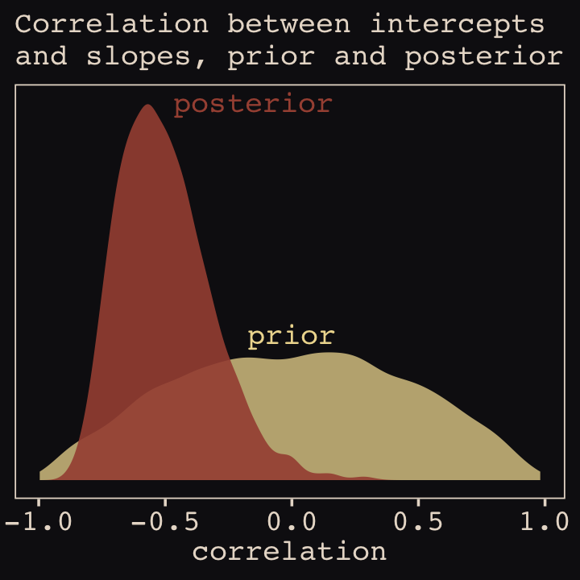
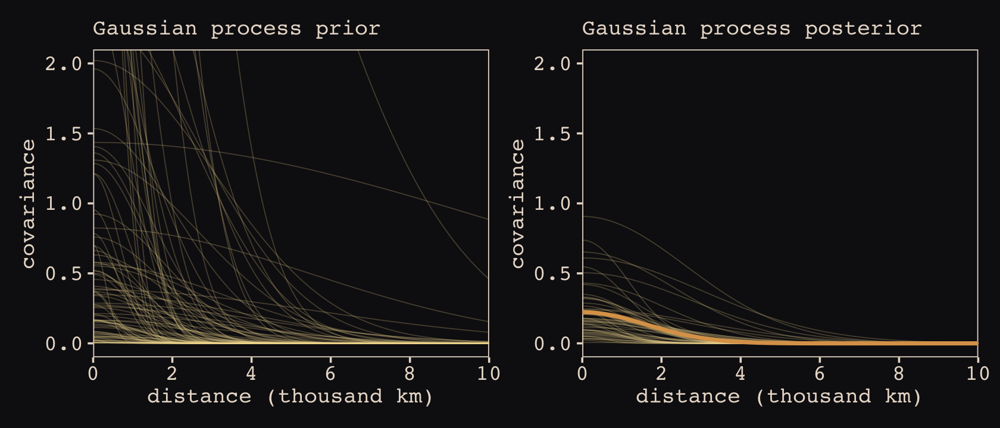
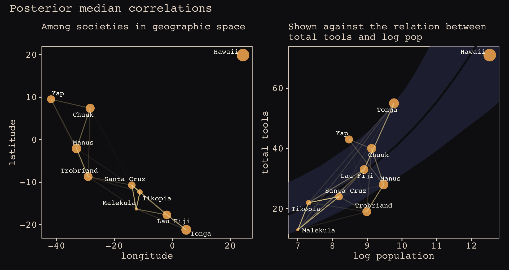
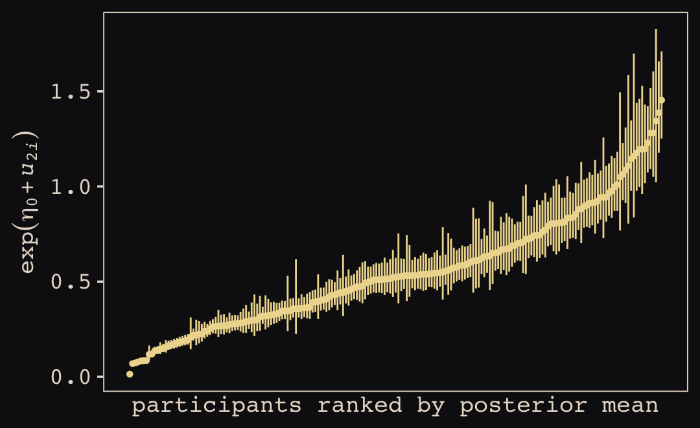
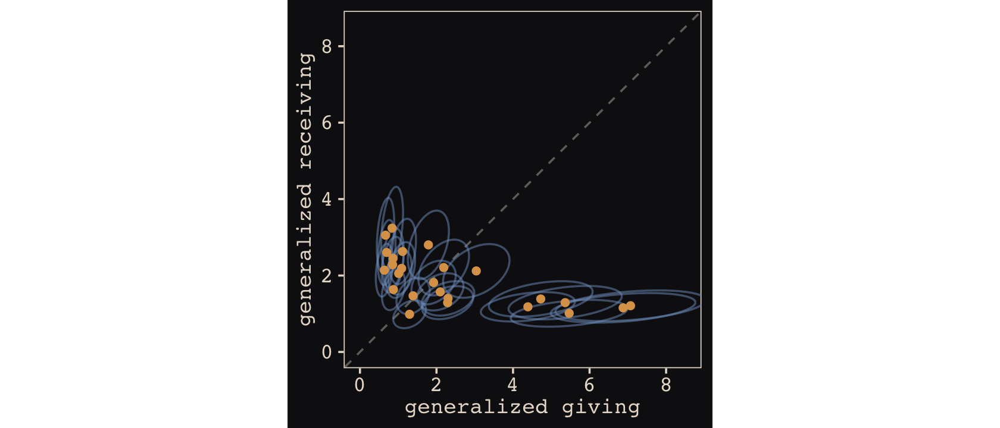
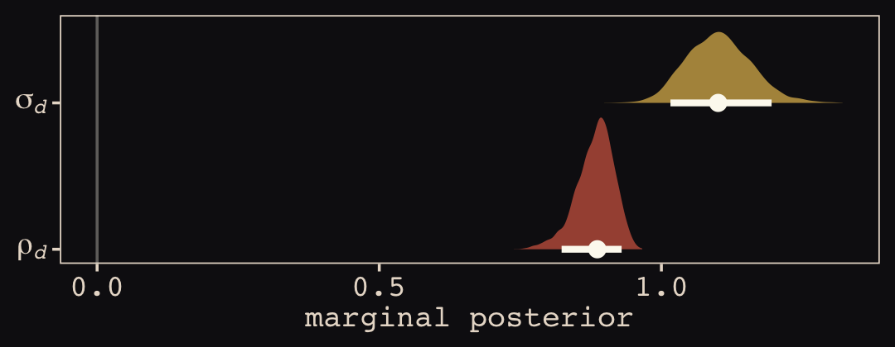
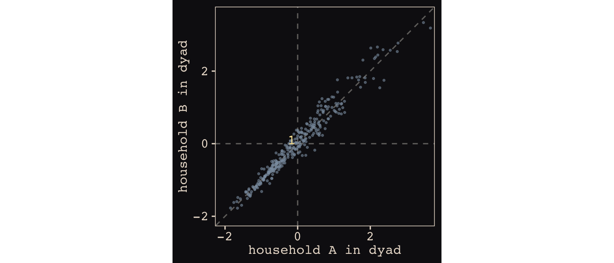
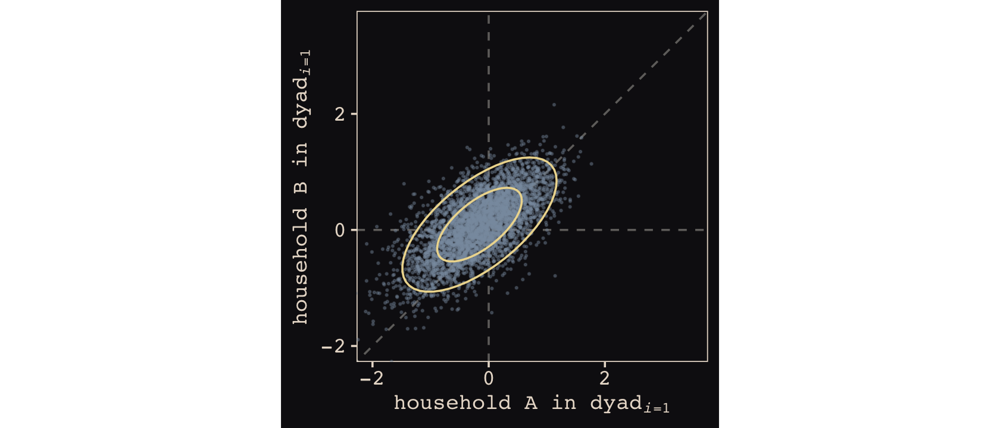

14 Adventures in Covariance
In this chapter, you’ll see how to… specify varying slopes in combination with the varying intercepts of the previous chapter. This will enable pooling that will improve estimates of how different units respond to or are influenced by predictor variables. It will also improve estimates of intercepts, by borrowing information across parameter types. Essentially, varying slopes models are massive interaction machines. They allow every unit in the data to have its own response to any treatment or exposure or event, while also improving estimates via pooling. When the variation in slopes is large, the average slope is of less interest. Sometimes, the pattern of variation in slopes provides hints about omitted variables that explain why some units respond more or less. We’ll see an example in this chapter.
The machinery that makes such complex varying effects possible will be used later in the chapter to extend the varying effects strategy to more subtle model types, including the use of continuous categories, using Gaussian process. Ordinary varying effects work only with discrete, unordered categories, such as individuals, countries, or ponds. In these cases, each category is equally different from all of the others. But it is possible to use pooling with categories such as age or location. In these cases, some ages and some locations are more similar than others. You’ll see how to model covariation among continuous categories of this kind, as well as how to generalize the strategy to seemingly unrelated types of models such as phylogenetic and network regressions. Finally, we’ll circle back to causal inference and use our new powers over covariance to go beyond the tools of Chapter 6, introducing instrumental variables. Instruments are ways of inferring cause without closing backdoor paths. However they are very tricky both in design and estimation. (McElreath, 2020a, pp. 436–437, emphasis in the original)
14.1 Varying slopes by construction
How should the robot pool information across intercepts and slopes? By modeling the joint population of intercepts and slopes, which means by modeling their covariance. In conventional multilevel models, the device that makes this possible is a joint multivariate Gaussian distribution for all of the varying effects, both intercepts and slopes. So instead of having two independent Gaussian distributions of intercepts and of slopes, the robot can do better by assigning a two-dimensional Gaussian distribution to both the intercepts (first dimension) and the slopes (second dimension). (p. 437)
14.1.0.1 Rethinking: Why Gaussian?
There is no reason the multivariate distribution of intercepts and slopes must be Gaussian. But there are both practical and epistemological justifications. On the practical side, there aren’t many multivariate distributions that are easy to work with. The only common ones are multivariate Gaussian and multivariate Student-t distributions. On the epistemological side, if all we want to say about these intercepts and slopes is their means, variances, and covariances, then the maximum entropy distribution is multivariate Gaussian. (p. 437)
As it turns out, brms does currently allow users to use the multivariate Student-\(t\) distribution in this way. For details, check out this discussion from the brms GitHub repository. Bürkner’s exemplar syntax from his comment on May 13, 2018, was y ~ x + (x | gr(g, dist = "student")). I haven’t experimented with this, but if you do, do consider sharing how it went.
14.1.1 Simulate the population.
If you follow this section closely, it’s a great template for simulating multilevel code for any of your future projects. You might think of this as an alternative to a frequentist power analysis. Vourre has done some nice work along these lines, I have a blog series on Bayesian power analysis, and Kruschke covered the topic in Chapter 13 of his (2015) text.
a <- 3.5 # average morning wait time
b <- -1 # average difference afternoon wait time
sigma_a <- 1 # std dev in intercepts
sigma_b <- 0.5 # std dev in slopes
rho <- -.7 # correlation between intercepts and slopes
# the next three lines of code simply combine the terms, above
mu <- c(a, b)
cov_ab <- sigma_a * sigma_b * rho
sigma <- matrix(c(sigma_a^2, cov_ab,
cov_ab, sigma_b^2), ncol = 2)It’s common to refer to a covariance matrix as \(\mathbf \Sigma\). The mathematical notation for those last couple lines of code is
\[ \mathbf \Sigma = \begin{bmatrix} \sigma_\alpha^2 & \sigma_\alpha \sigma_\beta \rho \\ \sigma_\alpha \sigma_\beta \rho & \sigma_\beta^2 \end{bmatrix}. \]
Anyway, if you haven’t used the matirx() function before, you might get a sense of the elements like so.
matrix(1:4, nrow = 2, ncol = 2)## [,1] [,2]
## [1,] 1 3
## [2,] 2 4This next block of code will finally yield our café data.
library(tidyverse)
sigmas <- c(sigma_a, sigma_b) # standard deviations
rho <- matrix(c(1, rho, # correlation matrix
rho, 1), nrow = 2)
# now matrix multiply to get covariance matrix
sigma <- diag(sigmas) %*% rho %*% diag(sigmas)
# how many cafes would you like?
n_cafes <- 20
set.seed(5) # used to replicate example
vary_effects <-
MASS::mvrnorm(n_cafes, mu, sigma) %>%
data.frame() %>%
set_names("a_cafe", "b_cafe")
head(vary_effects)## a_cafe b_cafe
## 1 4.223962 -1.6093565
## 2 2.010498 -0.7517704
## 3 4.565811 -1.9482646
## 4 3.343635 -1.1926539
## 5 1.700971 -0.5855618
## 6 4.134373 -1.1444539Let’s make sure we’re keeping this all straight. a_cafe = our café-specific intercepts; b_cafe = our café-specific slopes. These aren’t the actual data, yet. But at this stage, it might make sense to ask What’s the distribution of a_cafe and b_cafe? Our variant of Figure 14.2 contains the answer.
For our plots in this chapter, we’ll make our own custom ggplot2 theme. The color palette will come from the “pearl_earring” palette of the dutchmasters package (Thoen, 2019). You can learn more about the original painting, Vermeer’s (1665) Girl with a Pearl Earring, here.
# devtools::install_github("EdwinTh/dutchmasters")
library(dutchmasters)
dutchmasters$pearl_earring## red(lips) skin blue(scarf1) blue(scarf2) white(colar) gold(dress)
## "#A65141" "#E7CDC2" "#80A0C7" "#394165" "#FCF9F0" "#B1934A"
## gold(dress2) black(background) grey(scarf3) yellow(scarf4)
## "#DCA258" "#100F14" "#8B9DAF" "#EEDA9D" "#E8DCCF"scales::show_col(dutchmasters$pearl_earring)We’ll name our custom theme theme_pearl_earring(). I cobbled together this approach to defining a custom ggplot2 theme with help from
- Chapter 17 of Wichkam’s (2016) ggplot2: Elegant graphics for data analysis;
- Section 4.6 of Peng, Kross, and Anderson’s (2017) Mastering Software Development in R;
- Lea Waniek’s blog post, Custom themes in ggplot2, and
- Joey Stanley’s blog post of the same name, Custom themes in ggplot2.
theme_pearl_earring <- function(light_color = "#E8DCCF",
dark_color = "#100F14",
my_family = "Courier",
...) {
theme(line = element_line(color = light_color),
text = element_text(color = light_color, family = my_family),
axis.line = element_blank(),
axis.text = element_text(color = light_color),
axis.ticks = element_line(color = light_color),
legend.background = element_rect(fill = dark_color, color = "transparent"),
legend.key = element_rect(fill = dark_color, color = "transparent"),
panel.background = element_rect(fill = dark_color, color = light_color),
panel.grid = element_blank(),
plot.background = element_rect(fill = dark_color, color = dark_color),
strip.background = element_rect(fill = dark_color, color = "transparent"),
strip.text = element_text(color = light_color, family = my_family),
...)
}
# now set `theme_pearl_earring()` as the default theme
theme_set(theme_pearl_earring())Note how our custom theme_pearl_earing() function has a few adjustable parameters. Feel free to play around with alternative settings to see how they work. If we just use the defaults as we have defined them, here is our Figure 14.2.
vary_effects %>%
ggplot(aes(x = a_cafe, y = b_cafe)) +
geom_point(color = "#80A0C7") +
geom_rug(color = "#8B9DAF", size = 1/7)Again, these are not “data.” Figure 14.2 shows a distribution of parameters. Here’s their Pearson’s correlation coefficient.
cor(vary_effects$a_cafe, vary_effects$b_cafe)## [1] -0.5721537Since there are only 20 rows in our vary_effects simulation, it shouldn’t be a surprise that the Pearson’s correlation is a bit off from the population value of \(\rho = -.7\). If you rerun the simulation with n_cafes <- 200, the Pearson’s correlation is much closer to the data generating value.
14.1.2 Simulate observations.
Here we put those simulated parameters to use and simulate actual data from them.
n_visits <- 10
sigma <- 0.5 # std dev within cafes
set.seed(22) # used to replicate example
d <-
vary_effects %>%
mutate(cafe = 1:n_cafes) %>%
expand(nesting(cafe, a_cafe, b_cafe), visit = 1:n_visits) %>%
mutate(afternoon = rep(0:1, times = n() / 2)) %>%
mutate(mu = a_cafe + b_cafe * afternoon) %>%
mutate(wait = rnorm(n = n(), mean = mu, sd = sigma))We might peek at the data.
d %>%
glimpse()## Rows: 200
## Columns: 7
## $ cafe <int> 1, 1, 1, 1, 1, 1, 1, 1, 1, 1, 2, 2, 2, 2, 2, 2, 2, 2, 2, 2, 3, 3, 3, 3, 3, 3, 3, 3, 3, 3, …
## $ a_cafe <dbl> 4.223962, 4.223962, 4.223962, 4.223962, 4.223962, 4.223962, 4.223962, 4.223962, 4.223962, …
## $ b_cafe <dbl> -1.6093565, -1.6093565, -1.6093565, -1.6093565, -1.6093565, -1.6093565, -1.6093565, -1.609…
## $ visit <int> 1, 2, 3, 4, 5, 6, 7, 8, 9, 10, 1, 2, 3, 4, 5, 6, 7, 8, 9, 10, 1, 2, 3, 4, 5, 6, 7, 8, 9, 1…
## $ afternoon <int> 0, 1, 0, 1, 0, 1, 0, 1, 0, 1, 0, 1, 0, 1, 0, 1, 0, 1, 0, 1, 0, 1, 0, 1, 0, 1, 0, 1, 0, 1, …
## $ mu <dbl> 4.223962, 2.614606, 4.223962, 2.614606, 4.223962, 2.614606, 4.223962, 2.614606, 4.223962, …
## $ wait <dbl> 3.9678929, 3.8571978, 4.7278755, 2.7610133, 4.1194827, 3.5436522, 4.1909492, 2.5332235, 4.…Now we’ve finally simulated our data, we are ready to make our version of Figure 14.1, from way back on page 436.
d %>%
mutate(afternoon = ifelse(afternoon == 0, "M", "A"),
day = rep(rep(1:5, each = 2), times = n_cafes)) %>%
filter(cafe %in% c(3, 5)) %>%
mutate(cafe = str_c("café #", cafe)) %>%
ggplot(aes(x = visit, y = wait, group = day)) +
geom_point(aes(color = afternoon), size = 2) +
geom_line(color = "#8B9DAF") +
scale_color_manual(values = c("#80A0C7", "#EEDA9D")) +
scale_x_continuous(NULL, breaks = 1:10, labels = rep(c("M", "A"), times = 5)) +
scale_y_continuous("wait time in minutes", limits = c(0, NA)) +
theme_pearl_earring(axis.ticks.x = element_blank(),
legend.position = "none") +
facet_wrap(~ cafe, ncol = 1)14.1.2.1 Rethinking: Simulation and misspecification.
In this exercise, we are simulating data from a generative process and then analyzing that data with a model that reflects exactly the correct structure of that process. But in the real world, we’re never so lucky. Instead we are always forced to analyze data with a model that is misspecified: The true data-generating process is different than the model. Simulation can be used however to explore misspecification. Just simulate data from a process and then see how a number of models, none of which match exactly the data-generating process, perform. And always remember that Bayesian inference does not depend upon data-generating assumptions, such as the likelihood, being true. (p. 441)
14.1.3 The varying slopes model.
The statistical formula for our varying intercepts and slopes café model follows the form
\[\begin{align*} \text{wait}_i & \sim \operatorname{Normal}(\mu_i, \sigma) \\ \mu_i & = \alpha_{\text{café}[i]} + \beta_{\text{café}[i]} \text{afternoon}_i \\ \begin{bmatrix} \alpha_\text{café} \\ \beta_\text{café} \end{bmatrix} & \sim \operatorname{MVNormal} \begin{pmatrix} \begin{bmatrix} \alpha \\ \beta \end{bmatrix}, \mathbf \Sigma \end{pmatrix} \\ \mathbf \Sigma & = \begin{bmatrix} \sigma_\alpha & 0 \\ 0 & \sigma_\beta \end{bmatrix} \mathbf R \begin{bmatrix} \sigma_\alpha & 0 \\ 0 & \sigma_\beta \end{bmatrix} \\ \alpha & \sim \operatorname{Normal}(5, 2) \\ \beta & \sim \operatorname{Normal}(-1, 0.5) \\ \sigma & \sim \operatorname{Exponential}(1) \\ \sigma_\alpha & \sim \operatorname{Exponential}(1) \\ \sigma_\beta & \sim \operatorname{Exponential}(1) \\ \mathbf R & \sim \operatorname{LKJcorr}(2), \end{align*}\]
where \(\mathbf \Sigma\) is the covariance matrix and \(\mathbf R\) is the corresponding correlation matrix, which we might more fully express as
\[\mathbf R = \begin{bmatrix} 1 & \rho \\ \rho & 1 \end{bmatrix}.\]
And according to our prior, \(\mathbf R\) is distributed as \(\operatorname{LKJcorr}(2)\). We’ll use rethinking::rlkjcorr() to get a better sense of what that even is.
library(rethinking)
n_sim <- 1e4
set.seed(14)
r_1 <-
rlkjcorr(n_sim, K = 2, eta = 1) %>%
data.frame()
set.seed(14)
r_2 <-
rlkjcorr(n_sim, K = 2, eta = 2) %>%
data.frame()
set.seed(14)
r_4 <-
rlkjcorr(n_sim, K = 2, eta = 4) %>%
data.frame()Here are the \(\text{LKJcorr}\) distributions of Figure 14.3.
# for annotation
text <-
tibble(x = c(.83, .625, .45),
y = c(.56, .75, 1.07),
label = c("eta = 1", "eta = 2", "eta = 4"))
# plot
r_1 %>%
ggplot(aes(x = X2)) +
geom_density(color = "transparent", fill = "#394165", alpha = 2/3, adjust = 1/2) +
geom_density(data = r_2,
color = "transparent", fill = "#DCA258", alpha = 2/3, adjust = 1/2) +
geom_density(data = r_4,
color = "transparent", fill = "#FCF9F0", alpha = 2/3, adjust = 1/2) +
geom_text(data = text,
aes(x = x, y = y, label = label),
color = "#A65141", family = "Courier") +
scale_y_continuous(NULL, breaks = NULL) +
labs(title = expression(LKJcorr(eta)),
x = "correlation")As it turns out, the shape of the LKJ is sensitive to both \(\eta\) and the \(K\) dimensions of the correlation matrix. Our simulations only considered the shapes for when \(K = 2\). We can use a combination of the parse_dist() and stat_dist_halfeye() functions from the tidybayes package to derive analytic solutions for different combinations of \(\eta\) and \(K\).
library(tidybayes)
crossing(k = 2:5,
eta = 1:4) %>%
mutate(prior = str_c("lkjcorr_marginal(", k, ", ", eta, ")"),
strip = str_c("K==", k)) %>%
parse_dist(prior) %>%
ggplot(aes(y = eta, dist = .dist, args = .args)) +
stat_dist_halfeye(.width = c(.5, .95),
color = "#FCF9F0", fill = "#A65141") +
scale_x_continuous(expression(rho), limits = c(-1, 1),
breaks = c(-1, -.5, 0, .5, 1), labels = c("-1", "-.5", "0", ".5", "1")) +
scale_y_continuous(expression(eta), breaks = 1:4) +
ggtitle(expression("Marginal correlation for the LKJ prior relative to K and "*eta)) +
facet_wrap(~ strip, labeller = label_parsed, ncol = 4)To learn more about this plotting method, check out Kay’s (2020b) Marginal distribution of a single correlation from an LKJ distribution. To get a better intuition what that plot means, check out the illuminating blog post by Stephen Martin, Is the LKJ(1) prior uniform? “Yes”.
Okay, let’s get ready to model and switch out rethinking for brms.
detach(package:rethinking, unload = T)
library(brms)As defined above, our first model has both varying intercepts and afternoon slopes. I should point out that the (1 + afternoon | cafe) syntax specifies that we’d like brm() to fit the random effects for 1 (i.e., the intercept) and the afternoon slope as correlated. Had we wanted to fit a model in which they were orthogonal, we’d have coded (1 + afternoon || cafe).
b14.1 <-
brm(data = d,
family = gaussian,
wait ~ 1 + afternoon + (1 + afternoon | cafe),
prior = c(prior(normal(5, 2), class = Intercept),
prior(normal(-1, 0.5), class = b),
prior(exponential(1), class = sd),
prior(exponential(1), class = sigma),
prior(lkj(2), class = cor)),
iter = 2000, warmup = 1000, chains = 4, cores = 4,
seed = 867530,
file = "fits/b14.01")With Figure 14.4, we assess how the posterior for the correlation of the random effects compares to its prior.
post <- posterior_samples(b14.1)
post %>%
ggplot() +
geom_density(data = r_2, aes(x = X2),
color = "transparent", fill = "#EEDA9D", alpha = 3/4) +
geom_density(aes(x = cor_cafe__Intercept__afternoon),
color = "transparent", fill = "#A65141", alpha = 9/10) +
annotate(geom = "text",
x = c(-0.15, 0), y = c(2.21, 0.85),
label = c("posterior", "prior"),
color = c("#A65141", "#EEDA9D"), family = "Courier") +
scale_y_continuous(NULL, breaks = NULL) +
labs(subtitle = "Correlation between intercepts\nand slopes, prior and posterior",
x = "correlation")
McElreath then depicted multidimensional shrinkage by plotting the posterior mean of the varying effects compared to their raw, unpooled estimated. With brms, we can get the cafe-specific intercepts and afternoon slopes with coef(), which returns a three-dimensional list.
# coef(b14.1) %>% glimpse()
coef(b14.1)## $cafe
## , , Intercept
##
## Estimate Est.Error Q2.5 Q97.5
## 1 4.216696 0.1993313 3.826785 4.606377
## 2 2.157785 0.2042999 1.751544 2.565549
## 3 4.376312 0.2052879 3.961862 4.778193
## 4 3.241655 0.1997675 2.853799 3.629085
## 5 1.875707 0.2032712 1.475846 2.272343
## 6 4.259519 0.2040913 3.870432 4.659490
## 7 3.609445 0.1932584 3.225994 3.997230
## 8 3.946772 0.2060604 3.552232 4.352194
## 9 3.981665 0.2002013 3.583096 4.377192
## 10 3.559604 0.2009870 3.174088 3.948352
## 11 1.931988 0.2060002 1.533306 2.333540
## 12 3.838585 0.1972990 3.439314 4.223135
## 13 3.883919 0.2067283 3.473713 4.284497
## 14 3.174623 0.2008026 2.778669 3.560395
## 15 4.453381 0.2056054 4.053133 4.848117
## 16 3.390474 0.2002557 3.010207 3.790014
## 17 4.222700 0.1938111 3.846177 4.611957
## 18 5.745584 0.2014613 5.348419 6.146005
## 19 3.244284 0.2032538 2.845847 3.644350
## 20 3.736465 0.1983782 3.350465 4.119243
##
## , , afternoon
##
## Estimate Est.Error Q2.5 Q97.5
## 1 -1.1539479 0.2683787 -1.6784707 -0.6347978
## 2 -0.9132497 0.2660157 -1.4386466 -0.3765573
## 3 -1.9394732 0.2721773 -2.4915366 -1.4146809
## 4 -1.2347574 0.2673954 -1.7641862 -0.7055286
## 5 -0.1319460 0.2771434 -0.6642467 0.4219599
## 6 -1.2984953 0.2694507 -1.8251391 -0.7799761
## 7 -1.0157580 0.2566564 -1.5246254 -0.5173951
## 8 -1.6374434 0.2709313 -2.1798554 -1.1128193
## 9 -1.3079207 0.2663182 -1.8157938 -0.7835424
## 10 -0.9462419 0.2619188 -1.4567145 -0.4321138
## 11 -0.4319153 0.2737102 -0.9616812 0.1106692
## 12 -1.1807311 0.2669675 -1.7187254 -0.6584106
## 13 -1.8196329 0.2732656 -2.3606439 -1.2880028
## 14 -0.9436111 0.2597548 -1.4502848 -0.4451183
## 15 -2.1977218 0.2805511 -2.7615255 -1.6357641
## 16 -1.0487636 0.2652781 -1.5677353 -0.5353321
## 17 -1.2249797 0.2580986 -1.7306851 -0.7230910
## 18 -1.0204906 0.2819026 -1.5696446 -0.4603278
## 19 -0.2559100 0.2750050 -0.7939099 0.2664067
## 20 -1.0663943 0.2583372 -1.5802572 -0.5629665Here’s the code to extract the relevant elements from the coef() list, convert them to a tibble, and add the cafe index.
partially_pooled_params <-
# with this line we select each of the 20 cafe's posterior mean (i.e., Estimate)
# for both `Intercept` and `afternoon`
coef(b14.1)$cafe[ , 1, 1:2] %>%
data.frame() %>% # convert the two vectors to a data frame
rename(Slope = afternoon) %>%
mutate(cafe = 1:nrow(.)) %>% # add the `cafe` index
select(cafe, everything()) # simply moving `cafe` to the leftmost positionLike McElreath, we’ll compute the unpooled estimates directly from the data.
# compute unpooled estimates directly from data
un_pooled_params <-
d %>%
# with these two lines, we compute the mean value for each cafe's wait time
# in the morning and then the afternoon
group_by(afternoon, cafe) %>%
summarise(mean = mean(wait)) %>%
ungroup() %>% # ungrouping allows us to alter afternoon, one of the grouping variables
mutate(afternoon = ifelse(afternoon == 0, "Intercept", "Slope")) %>%
spread(key = afternoon, value = mean) %>% # use `spread()` just as in the previous block
mutate(Slope = Slope - Intercept) # finally, here's our slope!
# here we combine the partially-pooled and unpooled means into a single data object,
# which will make plotting easier.
params <-
# `bind_rows()` will stack the second tibble below the first
bind_rows(partially_pooled_params, un_pooled_params) %>%
# index whether the estimates are pooled
mutate(pooled = rep(c("partially", "not"), each = nrow(.)/2))
# here's a glimpse at what we've been working for
params %>%
slice(c(1:5, 36:40))## cafe Intercept Slope pooled
## 1 1 4.216696 -1.15394786 partially
## 2 2 2.157785 -0.91324975 partially
## 3 3 4.376312 -1.93947320 partially
## 4 4 3.241655 -1.23475741 partially
## 5 5 1.875707 -0.13194596 partially
## ...6 16 3.373496 -1.02563866 not
## ...7 17 4.236192 -1.22236910 not
## ...8 18 5.755987 -0.87660383 not
## ...9 19 3.121060 0.01441784 not
## ...10 20 3.728481 -1.03811567 notFinally, here’s our code for Figure 14.5.a, showing shrinkage in two dimensions.
p1 <-
ggplot(data = params, aes(x = Intercept, y = Slope)) +
stat_ellipse(geom = "polygon", type = "norm", level = 1/10, size = 0, alpha = 1/20, fill = "#E7CDC2") +
stat_ellipse(geom = "polygon", type = "norm", level = 2/10, size = 0, alpha = 1/20, fill = "#E7CDC2") +
stat_ellipse(geom = "polygon", type = "norm", level = 3/10, size = 0, alpha = 1/20, fill = "#E7CDC2") +
stat_ellipse(geom = "polygon", type = "norm", level = 4/10, size = 0, alpha = 1/20, fill = "#E7CDC2") +
stat_ellipse(geom = "polygon", type = "norm", level = 5/10, size = 0, alpha = 1/20, fill = "#E7CDC2") +
stat_ellipse(geom = "polygon", type = "norm", level = 6/10, size = 0, alpha = 1/20, fill = "#E7CDC2") +
stat_ellipse(geom = "polygon", type = "norm", level = 7/10, size = 0, alpha = 1/20, fill = "#E7CDC2") +
stat_ellipse(geom = "polygon", type = "norm", level = 8/10, size = 0, alpha = 1/20, fill = "#E7CDC2") +
stat_ellipse(geom = "polygon", type = "norm", level = 9/10, size = 0, alpha = 1/20, fill = "#E7CDC2") +
stat_ellipse(geom = "polygon", type = "norm", level = .99, size = 0, alpha = 1/20, fill = "#E7CDC2") +
geom_point(aes(group = cafe, color = pooled)) +
geom_line(aes(group = cafe), size = 1/4) +
scale_color_manual("Pooled?", values = c("#80A0C7", "#A65141")) +
coord_cartesian(xlim = range(params$Intercept),
ylim = range(params$Slope))
p1Learn more about stat_ellipse(), here. Let’s prep for Figure 14.5.b.
# retrieve the partially-pooled estimates with `coef()`
partially_pooled_estimates <-
coef(b14.1)$cafe[ , 1, 1:2] %>%
# convert the two vectors to a data frame
data.frame() %>%
# the Intercept is the wait time for morning (i.e., `afternoon == 0`)
rename(morning = Intercept) %>%
# `afternoon` wait time is the `morning` wait time plus the afternoon slope
mutate(afternoon = morning + afternoon,
cafe = 1:n()) %>% # add the `cafe` index
select(cafe, everything())
# compute unpooled estimates directly from data
un_pooled_estimates <-
d %>%
# as above, with these two lines, we compute each cafe's mean wait value by time of day
group_by(afternoon, cafe) %>%
summarise(mean = mean(wait)) %>%
# ungrouping allows us to alter the grouping variable, afternoon
ungroup() %>%
mutate(afternoon = ifelse(afternoon == 0, "morning", "afternoon")) %>%
# this separates out the values into morning and afternoon columns
spread(key = afternoon, value = mean)
estimates <-
bind_rows(partially_pooled_estimates, un_pooled_estimates) %>%
mutate(pooled = rep(c("partially", "not"), each = n() / 2))The code for Figure 14.5.b.
p2 <-
ggplot(data = estimates, aes(x = morning, y = afternoon)) +
# nesting `stat_ellipse()` within `mapply()` is a less redundant way to produce the
# ten-layered semitransparent ellipses we did with ten lines of `stat_ellipse()`
# functions in the previous plot
mapply(function(level) {
stat_ellipse(geom = "polygon", type = "norm",
size = 0, alpha = 1/20, fill = "#E7CDC2",
level = level)
},
# enter the levels here
level = c(1:9 / 10, .99)) +
geom_point(aes(group = cafe, color = pooled)) +
geom_line(aes(group = cafe), size = 1/4) +
scale_color_manual("Pooled?", values = c("#80A0C7", "#A65141")) +
labs(x = "morning wait (mins)",
y = "afternoon wait (mins)") +
coord_cartesian(xlim = range(estimates$morning),
ylim = range(estimates$afternoon))Here we combine the two subplots together with patchwork syntax.
library(patchwork)
(p1 + theme(legend.position = "none")) +
p2 +
plot_annotation(title = "Shrinkage in two dimensions")What I want you to appreciate in this plot is that shrinkage on the parameter scale naturally produces shrinkage where we actually care about it: on the outcome scale. And it also implies a population of wait times, shown by the [semitransparent ellipses]. That population is now positively correlated–cafés with longer morning waits also tend to have longer afternoon waits. They are popular, after all. But the population lies mostly below the dashed line where the waits are equal. You’ll wait less in the afternoon, on average. (p. 446)
14.2 Advanced varying slopes
In Section 13.3 we saw that data can be considered cross-classified if they have multiple grouping factors. We used the chipanzees data in that section and we only considered cross-classification by single intercepts. Turns out cross-classified models can be extended further. Let’s load and wrangle those data.
data(chimpanzees, package = "rethinking")
d <- chimpanzees
rm(chimpanzees)
# wrangle
d <-
d %>%
mutate(actor = factor(actor),
block = factor(block),
treatment = factor(1 + prosoc_left + 2 * condition),
# this will come in handy, later
labels = factor(treatment,
levels = 1:4,
labels = c("r/n", "l/n", "r/p", "l/p")))
glimpse(d)## Rows: 504
## Columns: 10
## $ actor <fct> 1, 1, 1, 1, 1, 1, 1, 1, 1, 1, 1, 1, 1, 1, 1, 1, 1, 1, 1, 1, 1, 1, 1, 1, 1, 1, 1, 1, 1, …
## $ recipient <int> NA, NA, NA, NA, NA, NA, NA, NA, NA, NA, NA, NA, NA, NA, NA, NA, NA, NA, NA, NA, NA, NA,…
## $ condition <int> 0, 0, 0, 0, 0, 0, 0, 0, 0, 0, 0, 0, 0, 0, 0, 0, 0, 0, 0, 0, 0, 0, 0, 0, 0, 0, 0, 0, 0, …
## $ block <fct> 1, 1, 1, 1, 1, 1, 2, 2, 2, 2, 2, 2, 3, 3, 3, 3, 3, 3, 4, 4, 4, 4, 4, 4, 5, 5, 5, 5, 5, …
## $ trial <int> 2, 4, 6, 8, 10, 12, 14, 16, 18, 20, 22, 24, 26, 28, 30, 32, 34, 36, 38, 40, 42, 44, 46,…
## $ prosoc_left <int> 0, 0, 1, 0, 1, 1, 1, 1, 0, 0, 0, 1, 0, 1, 0, 1, 1, 0, 1, 0, 0, 0, 1, 1, 0, 0, 1, 1, 0, …
## $ chose_prosoc <int> 1, 0, 0, 1, 1, 1, 0, 0, 1, 1, 0, 0, 0, 1, 1, 1, 0, 1, 1, 0, 0, 1, 1, 0, 1, 0, 0, 0, 1, …
## $ pulled_left <int> 0, 1, 0, 0, 1, 1, 0, 0, 0, 0, 1, 0, 1, 1, 0, 1, 0, 0, 1, 1, 1, 0, 1, 0, 0, 1, 0, 0, 0, …
## $ treatment <fct> 1, 1, 2, 1, 2, 2, 2, 2, 1, 1, 1, 2, 1, 2, 1, 2, 2, 1, 2, 1, 1, 1, 2, 2, 1, 1, 2, 2, 1, …
## $ labels <fct> r/n, r/n, l/n, r/n, l/n, l/n, l/n, l/n, r/n, r/n, r/n, l/n, r/n, l/n, r/n, l/n, l/n, r/…If I’m following along correctly with the text, McElreath’s m14.2 uses the centered parameterization. Recall from the last chapter that brms only supports the non-centered parameterization. Happily, McElreath’s m14.3 appears to use the non-centered parameterization. Thus, we’ll skip making a b14.2 and jump directly into making a b14.3. I believe one could describe the statistical model as
\[\begin{align*} \text{left_pull}_i & \sim \operatorname{Binomial}(n_i = 1, p_i) \\ \operatorname{logit} (p_i) & = \gamma_{\text{treatment}[i]} + \alpha_{\text{actor}[i], \text{treatment}[i]} + \beta_{\text{block}[i], \text{treatment}[i]} \\ \gamma_j & \sim \operatorname{Normal}(0, 1), \;\;\; \text{for } j = 1, \dots, 4 \\ \begin{bmatrix} \alpha_{j, 1} \\ \alpha_{j, 2} \\ \alpha_{j, 3} \\ \alpha_{j, 4} \end{bmatrix} & \sim \operatorname{MVNormal} \begin{pmatrix} \begin{bmatrix} 0 \\ 0 \\ 0 \\ 0 \end{bmatrix}, \mathbf \Sigma_\text{actor} \end{pmatrix} \\ \begin{bmatrix} \beta_{j, 1} \\ \beta_{j, 2} \\ \beta_{j, 3} \\ \beta_{j, 4} \end{bmatrix} & \sim \operatorname{MVNormal} \begin{pmatrix} \begin{bmatrix} 0 \\ 0 \\ 0 \\ 0 \end{bmatrix}, \mathbf \Sigma_\text{block} \end{pmatrix} \\ \mathbf \Sigma_\text{actor} & = \mathbf{S_\alpha R_\alpha S_\alpha} \\ \mathbf \Sigma_\text{block} & = \mathbf{S_\beta R_\beta S_\beta} \\ \sigma_{\alpha, [1]}, \dots, \sigma_{\alpha, [4]} & \sim \operatorname{Exponential}(1) \\ \sigma_{\beta, [1]}, \dots, \sigma_{\beta, [4]} & \sim \operatorname{Exponential}(1) \\ \mathbf R_\alpha & \sim \operatorname{LKJ}(2) \\ \mathbf R_\beta & \sim \operatorname{LKJ}(2). \end{align*}\]
In this model, we have four population-level intercepts, \(\gamma_1, \dots, \gamma_4\), one for each of the four levels of treatment. There are two higher-level grouping variables, actor and block, making this a cross-classified model.
The term \(\alpha_{\text{actor}[i], \text{treatment}[i]}\) is meant to convey that each of the treatment effects can vary by actor. The first line containing the \(\operatorname{MVNormal}(\cdot)\) operator indicates the actor-level deviations from the population-level estimates for \(\gamma_j\) follow the multivariate normal distribution where the four means are set to zero (i.e., they are deviations) and their spread around those zeros are controlled by \(\Sigma_\text{actor}\). In the first line below the last line containing \(\operatorname{MVNormal}(\cdot)\), we learn that \(\Sigma_\text{actor}\) can be decomposed into two terms, \(\mathbf S_\alpha\) and \(\mathbf R_\alpha\). It may not yet be clear by the notation, but \(\mathbf S_\alpha\) is a \(4 \times 4\) matrix,
\[ \mathbf S_\alpha = \begin{bmatrix} \sigma_{\alpha, [1]} & 0 & 0 & 0 \\ 0 & \sigma_{\alpha, [2]} & 0 & 0 \\ 0 & 0 & \sigma_{\alpha, [3]} & 0 \\ 0 & 0 & 0 & \sigma_{\alpha, [4]} \end{bmatrix}. \]
In a similar way, \(\mathbf R_\alpha\) is a \(4 \times 4\) matrix,
\[ \mathbf R_\alpha = \begin{bmatrix} 1 & \rho_{\alpha, [1, 2]} & \rho_{\alpha, [1, 3]} & \rho_{\alpha, [1, 4]} \\ \rho_{\alpha, [2, 1]} & 1 & \rho_{\alpha, [2, 3]} & \rho_{\alpha, [2, 4]} \\ \rho_{\alpha, [3, 1]} & \rho_{\alpha, [3, 2]} & 1 & \rho_{\alpha, [3, 4]} \\ \rho_{\alpha, [4, 1]} & \rho_{\alpha, [4, 2]} & \rho_{\alpha, [4, 3]} & 1 \end{bmatrix}. \]
The same overall pattern holds true for \(\beta_{\text{block}[i], \text{treatment}[i]}\) and the associated \(\beta\) parameters connected to the block grouping variable. All the population parameters \(\sigma_{\alpha, [1]}, \dots, \sigma_{\alpha, [4]}\) and \(\sigma_{\beta, [1]}, \dots, \sigma_{\beta, [4]}\) have individual \(\operatorname{Exponential}(1)\) priors. The two \(\mathbf R_{< \cdot >}\) matrices have the priors \(\operatorname{LKJ}(2)\).
I know; this is a lot. This all takes time to grapple with. Here’s how to fit such a model with brms.
b14.3 <-
brm(data = d,
family = binomial,
pulled_left | trials(1) ~ 0 + treatment + (0 + treatment | actor) + (0 + treatment | block),
prior = c(prior(normal(0, 1), class = b),
prior(exponential(1), class = sd, group = actor),
prior(exponential(1), class = sd, group = block),
prior(lkj(2), class = cor, group = actor),
prior(lkj(2), class = cor, group = block)),
iter = 2000, warmup = 1000, chains = 4, cores = 4,
seed = 4387510,
file = "fits/b14.03")Happily, we got no warnings about divergent transitions. Since it’s been a while, we’ll use bayesplotmcmc_rank_overlay() to examine the primary parameters with a trank plot.
library(bayesplot)
# give the parameters fancy names
names <-
c(str_c("treatment[", 1:4, "]"),
str_c("sigma['actor[", 1:4, "]']"),
str_c("sigma['block[", 1:4, "]']"),
str_c("rho['actor:treatment[", c(1, 1:2, 1:3), ",", rep(2:4, times = 1:3), "]']"),
str_c("rho['block:treatment[", c(1, 1:2, 1:3), ",", rep(2:4, times = 1:3), "]']"),
"chain")
# wrangle
posterior_samples(b14.3, add_chain = T) %>%
select(b_treatment1:`cor_block__treatment3__treatment4`, chain) %>%
set_names(names) %>%
# plot
mcmc_rank_overlay() +
scale_color_manual(values = c("#80A0C7", "#B1934A", "#A65141", "#EEDA9D")) +
scale_x_continuous(breaks = 0:4 * 1e3, labels = c(0, str_c(1:4, "K"))) +
coord_cartesian(ylim = c(30, NA)) +
theme(legend.position = "bottom") +
facet_wrap(~ parameter, labeller = label_parsed, ncol = 4)
Because we only fit a non-centered version of the model, we aren’t able to make a faithful version of McElreath’s Figure 14.6. However, we can still use posterior::summarise_draws() to help make histograms of the two kinds of effective sample sizes for our b14.3.
library(posterior)
posterior_samples(b14.3) %>%
summarise_draws() %>%
pivot_longer(starts_with("ess")) %>%
ggplot(aes(x = value)) +
geom_histogram(binwidth = 250, fill = "#EEDA9D", color = "#DCA258") +
xlim(0, NA) +
facet_wrap(~ name)Here is a summary of the model parameters.
print(b14.3)## Family: binomial
## Links: mu = logit
## Formula: pulled_left | trials(1) ~ 0 + treatment + (0 + treatment | actor) + (0 + treatment | block)
## Data: d (Number of observations: 504)
## Samples: 4 chains, each with iter = 2000; warmup = 1000; thin = 1;
## total post-warmup samples = 4000
##
## Group-Level Effects:
## ~actor (Number of levels: 7)
## Estimate Est.Error l-95% CI u-95% CI Rhat Bulk_ESS Tail_ESS
## sd(treatment1) 1.40 0.50 0.69 2.64 1.00 2180 2417
## sd(treatment2) 0.91 0.41 0.33 1.91 1.00 2810 2411
## sd(treatment3) 1.84 0.55 1.03 3.15 1.00 3534 3178
## sd(treatment4) 1.56 0.59 0.73 3.01 1.00 3092 2254
## cor(treatment1,treatment2) 0.42 0.28 -0.22 0.87 1.00 3004 3131
## cor(treatment1,treatment3) 0.52 0.25 -0.06 0.89 1.00 2874 2709
## cor(treatment2,treatment3) 0.49 0.26 -0.10 0.89 1.00 3276 3535
## cor(treatment1,treatment4) 0.44 0.26 -0.14 0.87 1.00 3030 2697
## cor(treatment2,treatment4) 0.44 0.28 -0.19 0.88 1.00 3560 3247
## cor(treatment3,treatment4) 0.58 0.24 0.01 0.92 1.00 3481 2826
##
## ~block (Number of levels: 6)
## Estimate Est.Error l-95% CI u-95% CI Rhat Bulk_ESS Tail_ESS
## sd(treatment1) 0.42 0.34 0.01 1.26 1.00 2235 2066
## sd(treatment2) 0.43 0.35 0.02 1.29 1.00 1901 2460
## sd(treatment3) 0.30 0.27 0.01 0.99 1.00 2864 1930
## sd(treatment4) 0.47 0.38 0.02 1.41 1.00 2116 2359
## cor(treatment1,treatment2) -0.07 0.37 -0.74 0.64 1.00 5342 3066
## cor(treatment1,treatment3) -0.02 0.38 -0.72 0.71 1.00 8111 2730
## cor(treatment2,treatment3) -0.02 0.38 -0.72 0.69 1.00 5309 2914
## cor(treatment1,treatment4) 0.05 0.37 -0.68 0.72 1.00 4579 2891
## cor(treatment2,treatment4) 0.05 0.38 -0.66 0.73 1.00 4518 3276
## cor(treatment3,treatment4) 0.02 0.38 -0.67 0.72 1.00 3951 3405
##
## Population-Level Effects:
## Estimate Est.Error l-95% CI u-95% CI Rhat Bulk_ESS Tail_ESS
## treatment1 0.22 0.52 -0.80 1.27 1.00 2221 2356
## treatment2 0.64 0.40 -0.17 1.43 1.00 2906 2486
## treatment3 -0.02 0.57 -1.16 1.09 1.00 3243 3001
## treatment4 0.66 0.54 -0.40 1.73 1.00 3365 2678
##
## Samples were drawn using sampling(NUTS). For each parameter, Bulk_ESS
## and Tail_ESS are effective sample size measures, and Rhat is the potential
## scale reduction factor on split chains (at convergence, Rhat = 1).Like McElreath explained on page 450, our b14.3 has 76 parameters:
- 4 average
treatmenteffects, as listed in the ‘Population-Level Effects’ section; - 7 \(\times\) 4 = 28 varying effects on
actor, as indicated in the ‘~actor:treatment (Number of levels: 7)’ header multiplied by the four levels oftreatment; - 6 \(\times\) 4 = 24 varying effects on
block, as indicated in the ‘~block:treatment (Number of levels: 6)’ header multiplied by the four levels oftreatment; - 8 standard deviations listed in the eight rows beginning with
sd(; and - 12 free correlation parameters listed in the eight rows beginning with
cor(.
Compute the WAIC estimate.
b14.3 <- add_criterion(b14.3, "waic")
waic(b14.3)##
## Computed from 4000 by 504 log-likelihood matrix
##
## Estimate SE
## elpd_waic -272.5 9.8
## p_waic 27.0 1.4
## waic 545.1 19.7
##
## 1 (0.2%) p_waic estimates greater than 0.4. We recommend trying loo instead.Like the \(p_\text{WAIC}\), our brms version of the model has about 27 effective parameters. Now we’ll get a better sense of the model with a posterior predictive check in the form of our version of Figure 14.7. McElreath described his R code 14.22 as “a big chunk of code” (p. 451). I’ll leave up to the reader to decide whether our big code chunk is any better.
# for annotation
text <-
distinct(d, labels) %>%
mutate(actor = 1,
prop = c(.07, .8, .08, .795))
nd <-
d %>%
distinct(actor, condition, labels, prosoc_left, treatment) %>%
mutate(block = 5)
# compute and wrangle the posterior predictions
fitted(b14.3,
newdata = nd) %>%
data.frame() %>%
bind_cols(nd) %>%
# add the empirical proportions
left_join(
d %>%
group_by(actor, treatment) %>%
mutate(proportion = mean(pulled_left)) %>%
distinct(actor, treatment, proportion),
by = c("actor", "treatment")
) %>%
mutate(condition = factor(condition)) %>%
# plot!
ggplot(aes(x = labels)) +
geom_hline(yintercept = .5, color = "#E8DCCF", alpha = 1/2, linetype = 2) +
# empirical proportions
geom_line(aes(y = proportion, group = prosoc_left),
size = 1/4, color = "#394165") +
geom_point(aes(y = proportion, shape = condition),
color = "#394165", fill = "#100F14", size = 2.5, show.legend = F) +
# posterior predictions
geom_line(aes(y = Estimate, group = prosoc_left),
size = 3/4, color = "#80A0C7") +
geom_pointrange(aes(y = Estimate, ymin = Q2.5, ymax = Q97.5, shape = condition),
color = "#80A0C7", fill = "#100F14", fatten = 8, size = 1/3, show.legend = F) +
# annotation for the conditions
geom_text(data = text,
aes(y = prop, label = labels),
color = "#DCA258", family = "Courier", size = 3) +
scale_shape_manual(values = c(21, 19)) +
scale_x_discrete(NULL, breaks = NULL) +
scale_y_continuous("proportion left lever", breaks = 0:2 / 2, labels = c("0", ".5", "1")) +
labs(subtitle = "Posterior predictions, in light blue, against the raw data, in dark blue, for\nmodel b14.3, the cross-classified varying effects model.") +
facet_wrap(~ actor, nrow = 1, labeller = label_both)These chimpanzees simply did not behave in any consistently different way in the partner treatments. The model we’ve used here does have some advantages, though. Since it allows for some individuals to differ in how they respond to the treatments, it could reveal a situation in which a treatment has no effect on average, even though some of the individuals respond strongly. That wasn’t the case here. But often we are more interested in the distribution of responses than in the average response, so a model that estimates the distribution of treatment effects is very useful. (p. 452)
For more practice with models of this kind, check out my blog post, Multilevel models and the index-variable approach.
14.3 Instruments and causal designs
Of course sometimes it won’t be possible to close all of the non-causal paths or rule of unobserved confounds. What can be done in that case? More than nothing. If you are lucky, there are ways to exploit a combination of natural experiments and clever modeling that allow causal inference even when non-causal paths cannot be closed. (p. 455)
14.3.1 Instrumental variables.
Say were are interested in the causal impact of education \(E\) on wages \(W\), \(E \rightarrow W\). Further imagine there is some unmeasured variable \(U\) that has causal relations with both, \(E \leftarrow U \rightarrow W\), creating a backdoor path. We might use good old ggdag to plot the DAG.
library(ggdag)
dag_coords <-
tibble(name = c("E", "U", "W"),
x = c(1, 2, 3),
y = c(1, 2, 1))Before we make the plot, we’ll make a custom theme, theme_pearl_dag(), to streamline our DAG plots.
theme_pearl_dag <- function(...) {
theme_pearl_earring() +
theme_dag() +
theme(panel.background = element_rect(fill = "#100F14"),
...)
}
dagify(E ~ U,
W ~ E + U,
coords = dag_coords) %>%
ggplot(aes(x = x, y = y, xend = xend, yend = yend)) +
geom_dag_point(aes(color = name == "U"),
shape = 21, stroke = 2, fill = "#FCF9F0", size = 6, show.legend = F) +
geom_dag_text(color = "#100F14", family = "Courier") +
geom_dag_edges(edge_colour = "#FCF9F0") +
scale_color_manual(values = c("#EEDA9D", "#A65141")) +
theme_pearl_dag()Instrumental variables will solve some of the difficulties we have in not being able to condition on \(U\). Here we’ll call our instrumental variable \(Q\). In the terms of the present example, the instrumental variable has the qualities that
- \(Q\) is independent of \(U\),
- \(Q\) is not independent of \(E\), and
- \(Q\) can only influence \(W\) through \(E\) (i.e., the effect of \(Q\) on \(W\) is fully mediated by \(E\)).
There is what this looks like in a DAG.
dag_coords <-
tibble(name = c("Q", "E", "U", "W"),
x = c(0, 1, 2, 3),
y = c(2, 1, 2, 1))
dagify(E ~ Q + U,
W ~ E + U,
coords = dag_coords) %>%
ggplot(aes(x = x, y = y, xend = xend, yend = yend)) +
geom_dag_point(aes(color = name == "U"),
shape = 21, stroke = 2, fill = "#FCF9F0", size = 6, show.legend = F) +
geom_dag_text(color = "#100F14", family = "Courier") +
geom_dag_edges(edge_colour = "#FCF9F0") +
scale_color_manual(values = c("#EEDA9D", "#A65141")) +
theme_pearl_dag()Sadly, our condition that \(Q\) can only influence \(W\) through \(E\)–often called the exclusion restriction–generally cannot be tested. Given \(U\) is unmeasured, by definition, we also cannot test that \(Q\) is independent of \(U\). These are model assumptions.
Let’s simulate data based on Angrist & Keueger (1991) to get a sense of how this works.
# make a standardizing function
standardize <- function(x) {
(x - mean(x)) / sd(x)
}
# simulate
set.seed(73)
n <- 500
dat_sim <-
tibble(u_sim = rnorm(n, mean = 0, sd = 1),
q_sim = sample(1:4, size = n, replace = T)) %>%
mutate(e_sim = rnorm(n, mean = u_sim + q_sim, sd = 1)) %>%
mutate(w_sim = rnorm(n, mean = u_sim + 0 * e_sim, sd = 1)) %>%
mutate(w = standardize(w_sim),
e = standardize(e_sim),
q = standardize(q_sim))
dat_sim## # A tibble: 500 x 7
## u_sim q_sim e_sim w_sim w e q
## <dbl> <int> <dbl> <dbl> <dbl> <dbl> <dbl>
## 1 -0.145 1 1.51 0.216 0.173 -0.575 -1.36
## 2 0.291 1 0.664 0.846 0.584 -1.09 -1.36
## 3 0.0938 3 2.44 -0.664 -0.402 -0.0185 0.428
## 4 -0.127 3 4.09 -0.725 -0.442 0.978 0.428
## 5 -0.847 4 2.62 -1.24 -0.780 0.0939 1.32
## 6 0.141 4 3.54 -0.0700 -0.0146 0.651 1.32
## 7 1.54 2 3.65 1.88 1.26 0.714 -0.464
## 8 2.74 3 4.91 2.52 1.67 1.48 0.428
## 9 1.55 3 4.18 0.624 0.439 1.04 0.428
## 10 0.462 1 0.360 0.390 0.286 -1.27 -1.36
## # … with 490 more rows\(Q\) in this context is like quarter in the school year, but inversely scaled such that larger numbers indicate more quarters. In this simulation, we have set the true effect of education on wages–\(E \rightarrow W\)–to be zero. Any univariate association is through the confounding variable \(U\). Also, \(Q\) has no direct effect on \(W\) or \(U\), but it does have a causal relation with \(E\), which is \(Q \rightarrow E \leftarrow U\). First we fit the univariable model corresponding to \(E \rightarrow W\).
b14.4 <-
brm(data = dat_sim,
family = gaussian,
w ~ 1 + e,
prior = c(prior(normal(0, 0.2), class = Intercept),
prior(normal(0, 0.5), class = b),
prior(exponential(1), class = sigma)),
iter = 2000, warmup = 1000, chains = 4, cores = 4,
seed = 14,
file = "fits/b14.04")print(b14.4)## Family: gaussian
## Links: mu = identity; sigma = identity
## Formula: w ~ 1 + e
## Data: dat_sim (Number of observations: 500)
## Samples: 4 chains, each with iter = 2000; warmup = 1000; thin = 1;
## total post-warmup samples = 4000
##
## Population-Level Effects:
## Estimate Est.Error l-95% CI u-95% CI Rhat Bulk_ESS Tail_ESS
## Intercept -0.00 0.04 -0.08 0.08 1.00 4195 2893
## e 0.40 0.04 0.32 0.48 1.00 3606 2780
##
## Family Specific Parameters:
## Estimate Est.Error l-95% CI u-95% CI Rhat Bulk_ESS Tail_ESS
## sigma 0.92 0.03 0.86 0.98 1.00 4362 3150
##
## Samples were drawn using sampling(NUTS). For each parameter, Bulk_ESS
## and Tail_ESS are effective sample size measures, and Rhat is the potential
## scale reduction factor on split chains (at convergence, Rhat = 1).Because we have not conditioned on \(U\), then model suggests a moderately large spurious causal relation for \(E \rightarrow W\). Now see what happens when we also condition directly on \(Q\), as in \(Q \rightarrow W \leftarrow E\).
b14.5 <-
brm(data = dat_sim,
family = gaussian,
w ~ 1 + e + q,
prior = c(prior(normal(0, 0.2), class = Intercept),
prior(normal(0, 0.5), class = b),
prior(exponential(1), class = sigma)),
iter = 2000, warmup = 1000, chains = 4, cores = 4,
seed = 14,
file = "fits/b14.05")print(b14.5)## Family: gaussian
## Links: mu = identity; sigma = identity
## Formula: w ~ 1 + e + q
## Data: dat_sim (Number of observations: 500)
## Samples: 4 chains, each with iter = 2000; warmup = 1000; thin = 1;
## total post-warmup samples = 4000
##
## Population-Level Effects:
## Estimate Est.Error l-95% CI u-95% CI Rhat Bulk_ESS Tail_ESS
## Intercept -0.00 0.04 -0.07 0.07 1.00 3712 2956
## e 0.63 0.05 0.54 0.73 1.00 3489 3290
## q -0.40 0.05 -0.50 -0.31 1.00 3404 3029
##
## Family Specific Parameters:
## Estimate Est.Error l-95% CI u-95% CI Rhat Bulk_ESS Tail_ESS
## sigma 0.86 0.03 0.81 0.91 1.00 3585 3149
##
## Samples were drawn using sampling(NUTS). For each parameter, Bulk_ESS
## and Tail_ESS are effective sample size measures, and Rhat is the potential
## scale reduction factor on split chains (at convergence, Rhat = 1).Holy smokes that’s a mess. This model suggests both \(E\) and \(Q\) have moderate to strong causal effects on \(W\), even though we know neither do based on the true data-generating model. Like McElreath said, “bad stuff happens” when we condition on an instrumental variable this way.
There is no backdoor path through \(Q\), as you can see. But there is a non-causal path from \(Q\) to \(W\) through \(U\): \(Q \rightarrow E \leftarrow U \rightarrow W\). This is a non-causal path, because changing \(Q\) doesn’t result in any change in \(W\) through this path. But since we are conditioning on \(E\) in the same model, and \(E\) is a collider of \(Q\) and \(U\), the non-causal path is open. This confounds the coefficient on \(Q\). It won’t be zero, because it’ll pick up the association between \(U\) and \(W\). And then, as a result, the coefficient on \(E\) can get even more confounded. Used this way, an instrument like \(Q\) might be called a bias amplifier. (p. 456, emphasis in the original)
The statistical solution to this mess is to express the data-generating DAG as a multivariate statistical model following the form
\[\begin{align*} \begin{bmatrix} W_i \\ E_i \end{bmatrix} & \sim \operatorname{MVNormal} \begin{pmatrix} \begin{bmatrix} \mu_{\text W,i} \\ \mu_{\text E,i} \end{bmatrix}, \color{#A65141}{\mathbf \Sigma} \end{pmatrix} \\ \mu_{\text W,i} & = \alpha_\text W + \beta_\text{EW} E_i \\ \mu_{\text E,i} & = \alpha_\text E + \beta_\text{QE} Q_i \\ \color{#A65141}{\mathbf\Sigma} & \color{#A65141}= \color{#A65141}{\begin{bmatrix} \sigma_\text W & 0 \\ 0 & \sigma_\text E \end{bmatrix} \mathbf R \begin{bmatrix} \sigma_\text W & 0 \\ 0 & \sigma_\text E \end{bmatrix}} \\ \color{#A65141}{\mathbf R} & \color{#A65141}= \color{#A65141}{\begin{bmatrix} 1 & \rho \\ \rho & 1 \end{bmatrix}} \\ \alpha_\text W \text{ and } \alpha_\text E & \sim \operatorname{Normal}(0, 0.2) \\ \beta_\text{EW} \text{ and } \beta_\text{QE} & \sim \operatorname{Normal}(0, 0.5) \\ \sigma_\text W \text{ and } \sigma_\text E & \sim \operatorname{Exponential}(1) \\ \rho & \sim \operatorname{LKJ}(2). \end{align*}\]
You might not remember, but we’ve actually fit a model like this before. It was b5.3_A from way back in Section 5.1.5.3. The big difference between that earlier model and this one is whereas the former did not include a residual correlation, \(\rho\), this one will. Thus, this time we will make sure to set set_rescor(TRUE) in the formula. Within brms parlance, priors for residual correlations are of class = rescor.
e_model <- bf(e ~ 1 + q)
w_model <- bf(w ~ 1 + e)
b14.6 <-
brm(data = dat_sim,
family = gaussian,
e_model + w_model + set_rescor(TRUE),
prior = c(# E model
prior(normal(0, 0.2), class = Intercept, resp = e),
prior(normal(0, 0.5), class = b, resp = e),
prior(exponential(1), class = sigma, resp = e),
# W model
prior(normal(0, 0.2), class = Intercept, resp = w),
prior(normal(0, 0.5), class = b, resp = w),
prior(exponential(1), class = sigma, resp = w),
# rho
prior(lkj(2), class = rescor)),
iter = 2000, warmup = 1000, chains = 4, cores = 4,
seed = 14,
file = "fits/b14.06")print(b14.6)## Family: MV(gaussian, gaussian)
## Links: mu = identity; sigma = identity
## mu = identity; sigma = identity
## Formula: e ~ 1 + q
## w ~ 1 + e
## Data: dat_sim (Number of observations: 500)
## Samples: 4 chains, each with iter = 2000; warmup = 1000; thin = 1;
## total post-warmup samples = 4000
##
## Population-Level Effects:
## Estimate Est.Error l-95% CI u-95% CI Rhat Bulk_ESS Tail_ESS
## e_Intercept -0.00 0.04 -0.07 0.07 1.00 2866 2597
## w_Intercept -0.00 0.04 -0.09 0.09 1.00 2895 2703
## e_q 0.59 0.04 0.52 0.66 1.00 2809 2527
## w_e -0.05 0.08 -0.21 0.09 1.00 1969 2492
##
## Family Specific Parameters:
## Estimate Est.Error l-95% CI u-95% CI Rhat Bulk_ESS Tail_ESS
## sigma_e 0.81 0.03 0.76 0.86 1.00 3419 2895
## sigma_w 1.02 0.05 0.94 1.12 1.00 2055 2223
##
## Residual Correlations:
## Estimate Est.Error l-95% CI u-95% CI Rhat Bulk_ESS Tail_ESS
## rescor(e,w) 0.54 0.05 0.44 0.64 1.00 1983 2373
##
## Samples were drawn using sampling(NUTS). For each parameter, Bulk_ESS
## and Tail_ESS are effective sample size measures, and Rhat is the potential
## scale reduction factor on split chains (at convergence, Rhat = 1).Now the parameter for \(E \rightarrow W\), w_e, is just where it should be–near zero. The residual correlation between \(E\) and \(Q\), rescor(e,w), is positive and large in magnitude, indicating their common influence from the unmeasured variable \(U\). Next we’ll take McElreath’s direction to “adjust the simulation and try other scenarios” (p. 459) by adjusting the causal relations, as in his R code 14.28.
set.seed(73)
n <- 500
dat_sim <-
tibble(u_sim = rnorm(n, mean = 0, sd = 1),
q_sim = sample(1:4, size = n, replace = T)) %>%
mutate(e_sim = rnorm(n, mean = u_sim + q_sim, sd = 1)) %>%
mutate(w_sim = rnorm(n, mean = -u_sim + 0.2 * e_sim, sd = 1)) %>%
mutate(w = standardize(w_sim),
e = standardize(e_sim),
q = standardize(q_sim))
dat_sim## # A tibble: 500 x 7
## u_sim q_sim e_sim w_sim w e q
## <dbl> <int> <dbl> <dbl> <dbl> <dbl> <dbl>
## 1 -0.145 1 1.51 0.809 0.248 -0.575 -1.36
## 2 0.291 1 0.664 0.396 -0.0563 -1.09 -1.36
## 3 0.0938 3 2.44 -0.364 -0.615 -0.0185 0.428
## 4 -0.127 3 4.09 0.347 -0.0922 0.978 0.428
## 5 -0.847 4 2.62 0.976 0.370 0.0939 1.32
## 6 0.141 4 3.54 0.357 -0.0852 0.651 1.32
## 7 1.54 2 3.65 -0.466 -0.690 0.714 -0.464
## 8 2.74 3 4.91 -1.98 -1.80 1.48 0.428
## 9 1.55 3 4.18 -1.64 -1.55 1.04 0.428
## 10 0.462 1 0.360 -0.461 -0.686 -1.27 -1.36
## # … with 490 more rowsWe’ll use update() to avoid re-compiling the models.
b14.4x <-
update(b14.4,
newdata = dat_sim,
iter = 2000, warmup = 1000, chains = 4, cores = 4,
seed = 14,
file = "fits/b14.04x")
b14.6x <-
update(b14.6,
newdata = dat_sim,
iter = 2000, warmup = 1000, chains = 4, cores = 4,
seed = 14,
file = "fits/b14.06x")Just for kicks, let’s examine the results with a coefficient plot.
text <-
tibble(Estimate = c(fixef(b14.4x)[2, 3], fixef(b14.6x)[4, 4]),
y = c(4.35, 3.65),
hjust = c(0, 1),
fit = c("b14.4x", "b14.6x"))
bind_rows(
# b_14.4x
posterior_summary(b14.4x)[1:3, ] %>%
data.frame() %>%
mutate(param = c("alpha[W]", "beta[EW]", "sigma[W]"),
fit = "b14.4x"),
# b_14.6x
posterior_summary(b14.6x)[1:7, ] %>%
data.frame() %>%
mutate(param = c("alpha[E]", "alpha[W]", "beta[QE]", "beta[EW]", "sigma[E]", "sigma[W]", "rho"),
fit = "b14.6x")) %>%
mutate(param = factor(param,
levels = c("rho", "sigma[W]", "sigma[E]", "beta[EW]", "beta[QE]", "alpha[W]", "alpha[E]"))) %>%
ggplot(aes(x = param, y = Estimate, color = fit)) +
geom_hline(yintercept = 0, color = "#E8DCCF", alpha = 1/4) +
geom_pointrange(aes(ymin = Q2.5, ymax = Q97.5),
fatten = 2, position = position_dodge(width = 0.5)) +
geom_text(data = text,
aes(x = y, label = fit, hjust = hjust)) +
scale_color_manual(NULL, values = c("#E7CDC2", "#A65141")) +
scale_x_discrete(NULL, labels = ggplot2:::parse_safe) +
ylab("marginal posterior") +
coord_flip() +
theme(axis.text.y = element_text(hjust = 0),
axis.ticks.y = element_blank(),
legend.position = "none")With the help from b14.6x, we found “that \(E\) and \(W\) have a negative correlation in their residual variance, because the confound positively influences one and negatively influences the other” (p. 459).
One can use the dagitty() and instrumentalVariables() functions from the dagitty package to first define a DAG and then query whether there are instrumental variables for a given exposure and outcome.
library(dagitty)
dagIV <- dagitty("dag{Q -> E <- U -> W <- E}")
instrumentalVariables(dagIV, exposure = "E", outcome = "W")## QThe hardest thing about instrumental variables is believing in any particular instrument. If you believe in your DAG, they are easy to believe. But should you believe in your DAG?…
In general, it is not possible to statistically prove whether a variable is a good instrument. As always, we need scientific knowledge outside of the data to make sense of the data. (p. 460)
14.3.1.1 Rethinking: Two-stage worst squares.
“The instrumental variable model is often discussed with an estimation procedure known as two-stage least squares (2SLS)” (p. 460, emphasis in the original). For a nice introduction to instrumental variables via 2SLS, see this practical introduction, and also the slides and video-lecture files, from the great Andrew Heiss.
14.3.2 Other designs.
There are potentially many ways to find natural experiments. Not all of them are strictly instrumental variables. But they can provide theoretically correct designs for causal inference, if you can believe the assumptions. Let’s consider two more.
In addition to the backdoor criterion you met in Chapter 6, there is something called the front-door criterion. (p. 460, emphasis in the original)
To get a sense of the front-door criterion, consider the following DAG with observed variables \(X\), \(Y\), and \(Z\) and an unobserved variable, \(U\).
dag_coords <-
tibble(name = c("X", "Z", "U", "Y"),
x = c(1, 2, 2, 3),
y = c(1, 1, 2, 1))
dagify(X ~ U,
Z ~ X,
Y ~ U + Z,
coords = dag_coords) %>%
ggplot(aes(x = x, y = y, xend = xend, yend = yend)) +
geom_dag_point(aes(color = name == "U"),
shape = 21, stroke = 2, fill = "#FCF9F0", size = 6, show.legend = F) +
geom_dag_text(color = "#100F14", family = "Courier") +
geom_dag_edges(edge_colour = "#FCF9F0") +
scale_color_manual(values = c("#EEDA9D", "#A65141")) +
theme_pearl_dag()We are interested, as usual, in the causal influence of \(X\) on \(Y\). But there is an unobserved confound \(U\), again as usual. It turns out that, if we can find a perfect mediator \(Z\), then we can possibly estimate the causal effect of \(X\) on \(Y\). It isn’t crazy to think that causes are mediated by other causes. Everything has a mechanism. \(Z\) in the DAG above is such a mechanism. If you have a believable \(Z\) variable, then the causal effect of \(X\) on \(Y\) is estimated by expressing the generative model as a statistical model, similar to the instrumental variable example before. (p. 461)
McElreath’s second example is the regression discontinuity approach. If you have a time series where the variable of interest is measured before and after some relevant intervention variable, you can estimate intercepts and slopes before and after the intervention, the cutoff. However,
in practice, one trend is fit for individuals above the cutoff and another to those below the cutoff. Then an estimate of the causal effect is the average difference between individuals just above and just below the cutoff. While the difference near the cuttoff is of interest, the entire function influences this difference. So some care is needed in choosing functions for the overall relationship between the exposure and the outcome. (p. 461)
McElreath’s not kidding about the need for care when fitting regression discontinuity models. Gleman’s blog is littered with awful examples (e.g., here, here, here, here, here). See also Gelman and Imbens’ (2019) paper, Why high-order polynomials should not be used in regression discontinuity designs, or Nick HK’s informative tweet on how this applies to autocorrelated data.5
14.5 Continuous categories and the Gaussian process
There is a way to apply the varying effects approach to continuous categories… The general approach is known as Gaussian process regression. This name is unfortunately wholly uninformative about what it is for and how it works.
We’ll proceed to work through a basic example that demonstrates both what it is for and how it works. The general purpose is to define some dimension along which cases differ. This might be individual differences in age. Or it could be differences in location. Then we measure the distance between each pair of cases. What the model then does is estimate a function for the covariance between pairs of cases at different distances. This covariance function provides one continuous category generalization of the varying effects approach. (p. 468, emphasis in the original)
14.5.1 Example: Spatial autocorrelation in Oceanic tools.
We start by loading the matrix of geographic distances.
# load the distance matrix
library(rethinking)
data(islandsDistMatrix)
# display (measured in thousands of km)
d_mat <- islandsDistMatrix
colnames(d_mat) <- c("Ml", "Ti", "SC", "Ya", "Fi", "Tr", "Ch", "Mn", "To", "Ha")
round(d_mat, 1)## Ml Ti SC Ya Fi Tr Ch Mn To Ha
## Malekula 0.0 0.5 0.6 4.4 1.2 2.0 3.2 2.8 1.9 5.7
## Tikopia 0.5 0.0 0.3 4.2 1.2 2.0 2.9 2.7 2.0 5.3
## Santa Cruz 0.6 0.3 0.0 3.9 1.6 1.7 2.6 2.4 2.3 5.4
## Yap 4.4 4.2 3.9 0.0 5.4 2.5 1.6 1.6 6.1 7.2
## Lau Fiji 1.2 1.2 1.6 5.4 0.0 3.2 4.0 3.9 0.8 4.9
## Trobriand 2.0 2.0 1.7 2.5 3.2 0.0 1.8 0.8 3.9 6.7
## Chuuk 3.2 2.9 2.6 1.6 4.0 1.8 0.0 1.2 4.8 5.8
## Manus 2.8 2.7 2.4 1.6 3.9 0.8 1.2 0.0 4.6 6.7
## Tonga 1.9 2.0 2.3 6.1 0.8 3.9 4.8 4.6 0.0 5.0
## Hawaii 5.7 5.3 5.4 7.2 4.9 6.7 5.8 6.7 5.0 0.0If you wanted to use color to more effectively visualize the values in the matrix, you might do something like this.
d_mat %>%
data.frame() %>%
rownames_to_column("row") %>%
gather(column, distance, -row) %>%
mutate(column = factor(column, levels = colnames(d_mat)),
row = factor(row, levels = rownames(d_mat)) %>% fct_rev(),
label = formatC(distance, format = 'f', digits = 2)) %>%
ggplot(aes(x = column, y = row)) +
geom_raster(aes(fill = distance)) +
geom_text(aes(label = label),
size = 3, family = "Courier", color = "#100F14") +
scale_fill_gradient(low = "#FCF9F0", high = "#A65141") +
scale_x_discrete(NULL, position = "top", expand = c(0, 0)) +
scale_y_discrete(NULL, expand = c(0, 0)) +
theme_pearl_earring(axis.text.y = element_text(hjust = 0)) +
theme(axis.ticks = element_blank())Figure 14.10 shows the “shape of the function relating distance to the covariance \(\mathbf K_{ij}\).”
tibble(x = seq(from = 0, to = 4, by = .01),
linear = exp(-1 * x),
squared = exp(-1 * x^2)) %>%
ggplot(aes(x = x)) +
geom_line(aes(y = linear),
color = "#B1934A", linetype = 2) +
geom_line(aes(y = squared),
color = "#DCA258") +
scale_x_continuous("distance", expand = c(0, 0)) +
scale_y_continuous("correlation",
breaks = c(0, .5, 1),
labels = c(0, ".5", 1))Now load the primary data.
data(Kline2) # load the ordinary data, now with coordinates
d <-
Kline2 %>%
mutate(society = 1:10)
rm(Kline2)
d %>% glimpse()## Rows: 10
## Columns: 10
## $ culture <fct> Malekula, Tikopia, Santa Cruz, Yap, Lau Fiji, Trobriand, Chuuk, Manus, Tonga, Hawaii
## $ population <int> 1100, 1500, 3600, 4791, 7400, 8000, 9200, 13000, 17500, 275000
## $ contact <fct> low, low, low, high, high, high, high, low, high, low
## $ total_tools <int> 13, 22, 24, 43, 33, 19, 40, 28, 55, 71
## $ mean_TU <dbl> 3.2, 4.7, 4.0, 5.0, 5.0, 4.0, 3.8, 6.6, 5.4, 6.6
## $ lat <dbl> -16.3, -12.3, -10.7, 9.5, -17.7, -8.7, 7.4, -2.1, -21.2, 19.9
## $ lon <dbl> 167.5, 168.8, 166.0, 138.1, 178.1, 150.9, 151.6, 146.9, -175.2, -155.6
## $ lon2 <dbl> -12.5, -11.2, -14.0, -41.9, -1.9, -29.1, -28.4, -33.1, 4.8, 24.4
## $ logpop <dbl> 7.003065, 7.313220, 8.188689, 8.474494, 8.909235, 8.987197, 9.126959, 9.472705, 9.769956…
## $ society <int> 1, 2, 3, 4, 5, 6, 7, 8, 9, 10👋 Heads up: The brms package is capable of handling a variety of Gaussian process models using the gp() function. As we will see throughout this section, this method will depart in important ways from how McElreath fits Gaussian process models with rethinking. Due in large part to these differences, this section and its analogue in the first edition of Statistical rethinking (McElreath, 2015) baffled me, at first. Happily, fellow enthusiasts Louis Bliard and Richard Torkar reached out and helped me hammer this section out behind the scenes. The method to follow is due in large part to their efforts. 🤝
The brms::gp() function takes a handful of arguments. The first and most important argument, ..., accepts the names of one or more predictors from the data. When fitting a spatial Gaussian process of this kind, we’ll enter in the latitude and longitude data for each of levels of culture. This will be an important departure from the text. For his m14.8, McElreath directly entered in the Dmat distance matrix data into ulam(). In so doing, he defined \(D_{ij}\), the matrix of distances between each of the societies. When using brms, we instead estimate the distance matrix from the latitude and longitude variables.
Before we practice fitting a Gaussian process with the brms::gp() function, we’ll first need to think a little bit about our data. McElreath’s Dmat measured the distances in thousands of km. However, the lat and lon2 variables in the data above are in decimal degrees, which means they need to be transformed to keep our model in the same metric as McElreath’s. Turns out that one decimal degree is 111.32km (at the equator). Thus, we can turn both lat and lon2 into 1,000 km units by multiplying each by 0.11132. Here’s the conversion.
d <-
d %>%
mutate(lat_adj = lat * 0.11132,
lon2_adj = lon2 * 0.11132)
d %>%
select(culture, lat, lon2, lat_adj:lon2_adj)## culture lat lon2 lat_adj lon2_adj
## 1 Malekula -16.3 -12.5 -1.814516 -1.391500
## 2 Tikopia -12.3 -11.2 -1.369236 -1.246784
## 3 Santa Cruz -10.7 -14.0 -1.191124 -1.558480
## 4 Yap 9.5 -41.9 1.057540 -4.664308
## 5 Lau Fiji -17.7 -1.9 -1.970364 -0.211508
## 6 Trobriand -8.7 -29.1 -0.968484 -3.239412
## 7 Chuuk 7.4 -28.4 0.823768 -3.161488
## 8 Manus -2.1 -33.1 -0.233772 -3.684692
## 9 Tonga -21.2 4.8 -2.359984 0.534336
## 10 Hawaii 19.9 24.4 2.215268 2.716208Note that because this conversion is valid at the equator, it is only an approximation for latitude and longitude coordinates for our island societies.
Now we’ve scaled our two spatial variables, the basic way to use them in a brms Gaussian process is including gp(lat_adj, lon2_adj) into the formula argument within the brm() function. Note however that one of the default gp() settings is scale = TRUE, which scales predictors so that the maximum distance between two points is 1. We don’t want this for our example, so we will set scale = FALSE instead.
Our Gaussian process model is an extension of the non-linear model from Section 11.2.1.1, b11.11. Thus our model here will also use the non-linear syntax. Here’s how we might use brms to fit our amended non-centered version of McElreath’s m14.8.
b14.8 <-
brm(data = d,
family = poisson(link = "identity"),
bf(total_tools ~ exp(a) * population^b / g,
a ~ 1 + gp(lat_adj, lon2_adj, scale = FALSE),
b + g ~ 1,
nl = TRUE),
prior = c(prior(normal(0, 1), nlpar = a),
prior(exponential(1), nlpar = b, lb = 0),
prior(exponential(1), nlpar = g, lb = 0),
prior(inv_gamma(2.874624, 2.941204), class = lscale, coef = gplat_adjlon2_adj, nlpar = a),
prior(exponential(1), class = sdgp, coef = gplat_adjlon2_adj, nlpar = a)),
iter = 2000, warmup = 1000, chains = 4, cores = 4,
seed = 14,
sample_prior = T,
file = "fits/b14.08")Check the results.
print(b14.8)## Family: poisson
## Links: mu = identity
## Formula: total_tools ~ exp(a) * population^b/g
## a ~ 1 + gp(lat_adj, lon2_adj, scale = FALSE)
## b ~ 1
## g ~ 1
## Data: d (Number of observations: 10)
## Samples: 4 chains, each with iter = 2000; warmup = 1000; thin = 1;
## total post-warmup samples = 4000
##
## Gaussian Process Terms:
## Estimate Est.Error l-95% CI u-95% CI Rhat Bulk_ESS Tail_ESS
## sdgp(a_gplat_adjlon2_adj) 0.47 0.30 0.15 1.27 1.00 1038 1565
## lscale(a_gplat_adjlon2_adj) 1.64 0.91 0.51 4.00 1.00 1180 2207
##
## Population-Level Effects:
## Estimate Est.Error l-95% CI u-95% CI Rhat Bulk_ESS Tail_ESS
## a_Intercept 0.34 0.86 -1.41 1.95 1.00 2842 2573
## b_Intercept 0.26 0.08 0.09 0.42 1.00 1526 1376
## g_Intercept 0.67 0.65 0.05 2.44 1.00 2185 2118
##
## Samples were drawn using sampling(NUTS). For each parameter, Bulk_ESS
## and Tail_ESS are effective sample size measures, and Rhat is the potential
## scale reduction factor on split chains (at convergence, Rhat = 1).The posterior_summary() function will return a summary that looks more like the one in the text.
posterior_summary(b14.8)[1:15, ] %>% round(digits = 2)## Estimate Est.Error Q2.5 Q97.5
## b_a_Intercept 0.34 0.86 -1.41 1.95
## b_b_Intercept 0.26 0.08 0.09 0.42
## b_g_Intercept 0.67 0.65 0.05 2.44
## sdgp_a_gplat_adjlon2_adj 0.47 0.30 0.15 1.27
## lscale_a_gplat_adjlon2_adj 1.64 0.91 0.51 4.00
## zgp_a_gplat_adjlon2_adj[1] -0.46 0.73 -1.91 0.95
## zgp_a_gplat_adjlon2_adj[2] 0.44 0.85 -1.23 2.07
## zgp_a_gplat_adjlon2_adj[3] -0.62 0.72 -1.99 0.90
## zgp_a_gplat_adjlon2_adj[4] 1.00 0.68 -0.26 2.41
## zgp_a_gplat_adjlon2_adj[5] 0.25 0.74 -1.18 1.75
## zgp_a_gplat_adjlon2_adj[6] -1.04 0.77 -2.59 0.48
## zgp_a_gplat_adjlon2_adj[7] 0.16 0.73 -1.40 1.59
## zgp_a_gplat_adjlon2_adj[8] -0.22 0.85 -1.86 1.51
## zgp_a_gplat_adjlon2_adj[9] 0.42 0.91 -1.46 2.12
## zgp_a_gplat_adjlon2_adj[10] -0.38 0.80 -2.01 1.16Let’s focus on our three non-linear parameters, first. Happily, both our b_b_Intercept and b_g_Intercept summaries look a lot like those for McElreath’s b and g, respectively. Our b_a_Intercept might look distressingly small, but that’s just because of how we parameterized our model. It’s actually very close to McElreath’s a after you exponentiate.
fixef(b14.8, probs = c(.055, .945))["a_Intercept", c(1, 3:4)] %>%
exp() %>%
round(digits = 2)## Estimate Q5.5 Q94.5
## 1.41 0.35 5.26Our Gaussian process parameters are different from McElreath’s. From the gp section of the brms reference manual (Bürkner, 2021i), we learn the brms parameterization follows the form
\[k(x_{i},x_{j}) = sdgp^2 \exp \big (-||x_i - x_j||^2 / (2 lscale^2) \big ),\]
where \(k(x_{i},x_{j})\) is the same as McElreath’s \(\mathbf K_{ij}\) and \(||x_i - x_j||^2\) is the Euclidean distance, the same as McElreath’s \(D_{ij}^2\). Thus we could also express the brms parameterization as
\[\mathbf K_{ij} = sdgp^2 \exp \big (-D_{ij}^2 / (2 lscale^2) \big ),\]
which is much closer to McElreath’s
\[\mathbf K_{ij} = \eta^2 \exp \big (-\rho^2 D_{ij}^2 \big ) + \delta_{ij} \sigma^2\]
On page 470, McElreath explained that the final \(\delta_{ij} \sigma^2\) term is mute with the Oceanic societies data. Thus we won’t consider it further. This reduces McElreath’s equation to
\[\mathbf K_{ij} = \eta^2 \exp \big (-\rho^2 D_{ij}^2 \big ).\]
Importantly, what McElreath called \(\eta\), Bürkner called \(sdgp\). While McElreath estimated \(\eta^2\), brms simply estimated \(sdgp\). So we’ll have to square our sdgp(a_gplat_adjlon2_adj) before it’s on the same scale as etasq in the text. Here it is.
post <-
posterior_samples(b14.8) %>%
mutate(etasq = sdgp_a_gplat_adjlon2_adj^2)
post %>%
mean_hdi(etasq, .width = .89) %>%
mutate_if(is.double, round, digits = 3)## etasq .lower .upper .width .point .interval
## 1 0.313 0.001 0.62 0.89 mean hdiThough our posterior is a little bit larger than McElreath’s, we’re in the ballpark. You may have noticed that in our model brm() code, above, we just went with the flow and kept the exponential(1) prior on sdgp. The brms default would have been student_t(3, 0, 15.6).
Now look at the denominator of the inner part of Bürkner’s equation, \(2 lscale^2\). This appears to be the brms equivalent to McElreath’s \(\rho^2\). Or at least it’s what we’ve got. Anyway, also note that McElreath estimated \(\rho^2\) directly as rhosq. If I’m doing the algebra correctly, we might expect
\[\begin{align*} \rho^2 & = 1/(2 \cdot lscale^2) & \text{and thus} \\ lscale & = \sqrt{1 / (2 \cdot \rho^2)}. \end{align*}\]
To get a sense of this relationship, it might be helpful to plot.
p1 <-
tibble(`rho^2` = seq(from = 0, to = 11, by = 0.01)) %>%
mutate(lscale = sqrt(1 / (2 * `rho^2`))) %>%
ggplot(aes(x = `rho^2`, y = lscale)) +
geom_hline(yintercept = 0, color = "#FCF9F0", size = 1/4, linetype = 2) +
geom_vline(xintercept = 0, color = "#FCF9F0", size = 1/4, linetype = 2) +
geom_line(color = "#A65141") +
xlab(expression(rho^2)) +
coord_cartesian(xlim = c(0, 10),
ylim = c(0, 10))
p2 <-
tibble(lscale = seq(from = 0, to = 11, by = 0.01)) %>%
mutate(`rho^2` = 1 / (2 * lscale^2)) %>%
ggplot(aes(x = lscale, y = `rho^2`)) +
geom_hline(yintercept = 0, color = "#FCF9F0", size = 1/4, linetype = 2) +
geom_vline(xintercept = 0, color = "#FCF9F0", size = 1/4, linetype = 2) +
geom_line(color = "#80A0C7") +
ylab(expression(rho^2)) +
coord_cartesian(xlim = c(0, 10),
ylim = c(0, 10))
p1 + p2
The two aren’t quite inverses of one another, but the overall pattern is when one is large, the other is small. Now we have a sense of how they compare and how to covert one to the other, let’s see how our posterior for \(lscale\) looks when we convert it to the scale of McElreath’s \(\rho^2\).
post <-
post %>%
mutate(rhosq = 1 / (2 * lscale_a_gplat_adjlon2_adj^2))
post %>%
mean_hdi(rhosq, .width = .89) %>%
mutate_if(is.double, round, digits = 3)## rhosq .lower .upper .width .point .interval
## 1 0.422 0.009 0.908 0.89 mean hdiThis is about a third of the size of the McElreath’s \(\rho^2 = 1.31, 89 \text{% HDI } [0.08, 4.41]\). The plot deepens. If you look back, you’ll see we used a very different prior for lscale. Here it is: inv_gamma(2.874624, 2.941204). Use get_prior() to discover where that came from.
get_prior(data = d,
family = poisson(link = "identity"),
bf(total_tools ~ exp(a) * population^b / g,
a ~ 1 + gp(lat_adj, lon2_adj, scale = FALSE),
b + g ~ 1,
nl = TRUE))## prior class coef group resp dpar nlpar bound source
## (flat) b a default
## (flat) b Intercept a (vectorized)
## (flat) lscale a default
## inv_gamma(2.874624, 2.941204) lscale gplat_adjlon2_adj a default
## student_t(3, 0, 15.6) sdgp a default
## student_t(3, 0, 15.6) sdgp gplat_adjlon2_adj a (vectorized)
## (flat) b b default
## (flat) b Intercept b (vectorized)
## (flat) b g default
## (flat) b Intercept g (vectorized)That is, we used the brms default prior for \(lscale\). In a GitHub exchange, Bürkner pointed out that brms uses special priors for \(lscale\) parameters based on Michael Betancourt’s (2017) vignette, Robust Gaussian processes in Stan. We can use the dinvgamma() function from the well-named invgamma package (Kahle & Stamey, 2017) to get a sense of what that prior looks like.
tibble(lscale = seq(from = 0.01, to = 9, by = 0.01)) %>%
mutate(density = invgamma::dinvgamma(lscale, 2.874624, 2.941204)) %>%
ggplot(aes(x = lscale, y = density)) +
geom_area(fill = "#80A0C7") +
annotate(geom = "text",
x = 4.75, y = 0.75,
label = "inverse gamma(2.874624, 2.941204)",
color = "#8B9DAF", family = "Courier") +
scale_y_continuous(NULL, breaks = NULL) +
coord_cartesian(xlim = c(0, 8))
Anyways, let’s make the subplots for our version of Figure 14.11 to get a sense of what this all means. Start with the left panel, the prior predictive distribution for the covariance.
# for `slice_sample()`
set.seed(14)
# wrangle
p1 <-
prior_samples(b14.8) %>%
mutate(iter = 1:n(),
etasq = sdgp_a_gplat_adjlon2_adj^2,
rhosq = 1 / (2 * lscale_a_1_gplat_adjlon2_adj^2)) %>%
slice_sample(n = 100) %>%
expand(nesting(iter, etasq, rhosq),
x = seq(from = 0, to = 10, by = .05)) %>%
mutate(covariance = etasq * exp(-rhosq * x^2)) %>%
# plot
ggplot(aes(x = x, y = covariance)) +
geom_line(aes(group = iter),
size = 1/4, alpha = 1/4, color = "#EEDA9D") +
scale_x_continuous("distance (thousand km)", expand = c(0, 0),
breaks = 0:5 * 2) +
coord_cartesian(xlim = c(0, 10),
ylim = c(0, 2)) +
labs(subtitle = "Gaussian process prior")Now make the right panel, the posterior distribution.
# for `slice_sample()`
set.seed(14)
# wrangle
p2 <-
post %>%
transmute(iter = 1:n(),
etasq = sdgp_a_gplat_adjlon2_adj^2,
rhosq = 1 / (2 * lscale_a_gplat_adjlon2_adj^2)) %>%
slice_sample(n = 50) %>%
expand(nesting(iter, etasq, rhosq),
x = seq(from = 0, to = 10, by = .05)) %>%
mutate(covariance = etasq * exp(-rhosq * x^2)) %>%
# plot
ggplot(aes(x = x, y = covariance)) +
geom_line(aes(group = iter),
size = 1/4, alpha = 1/4, color = "#EEDA9D") +
stat_function(fun = function(x) mean(post$sdgp_a_gplat_adjlon2_adj)^2 *
exp(-(1 / (2 * mean(post$lscale_a_gplat_adjlon2_adj)^2)) * x^2),
color = "#DCA258", size = 1) +
scale_x_continuous("distance (thousand km)", expand = c(0, 0),
breaks = 0:5 * 2) +
coord_cartesian(xlim = c(0, 10),
ylim = c(0, 2)) +
labs(subtitle = "Gaussian process posterior")Combine the two with patchwork.
p1 | p2
Though the Gaussian process parameters from our brms parameterization looked different from McElreath’s, they resulted in a similar decline in spatial covariance.
Let’s finish this up and “push the parameters back through the function for \(\mathbf{K}\), the covariance matrix” (p. 473).
# compute posterior median covariance among societies
k <- matrix(0, nrow = 10, ncol = 10)
for (i in 1:10)
for (j in 1:10)
k[i, j] <- median(post$etasq) *
exp(-median(post$rhosq) * islandsDistMatrix[i, j]^2)
diag(k) <- median(post$etasq) + 0.01
k %>% round(2)## [,1] [,2] [,3] [,4] [,5] [,6] [,7] [,8] [,9] [,10]
## [1,] 0.17 0.15 0.14 0.00 0.11 0.06 0.01 0.02 0.07 0.00
## [2,] 0.15 0.17 0.16 0.00 0.11 0.06 0.02 0.03 0.06 0.00
## [3,] 0.14 0.16 0.17 0.00 0.09 0.08 0.03 0.04 0.05 0.00
## [4,] 0.00 0.00 0.00 0.17 0.00 0.04 0.09 0.08 0.00 0.00
## [5,] 0.11 0.11 0.09 0.00 0.17 0.01 0.00 0.00 0.14 0.00
## [6,] 0.06 0.06 0.08 0.04 0.01 0.17 0.07 0.13 0.00 0.00
## [7,] 0.01 0.02 0.03 0.09 0.00 0.07 0.17 0.11 0.00 0.00
## [8,] 0.02 0.03 0.04 0.08 0.00 0.13 0.11 0.17 0.00 0.00
## [9,] 0.07 0.06 0.05 0.00 0.14 0.00 0.00 0.00 0.17 0.00
## [10,] 0.00 0.00 0.00 0.00 0.00 0.00 0.00 0.00 0.00 0.17We’ll continue to follow suit and change these to a correlation matrix.
# convert to correlation matrix
rho <- round(cov2cor(k), 2)
# add row/col names for convenience
colnames(rho) <- c("Ml", "Ti", "SC", "Ya", "Fi", "Tr", "Ch", "Mn", "To", "Ha")
rownames(rho) <- colnames(rho)
rho %>% round(2)## Ml Ti SC Ya Fi Tr Ch Mn To Ha
## Ml 1.00 0.89 0.85 0.01 0.65 0.35 0.08 0.14 0.41 0
## Ti 0.89 1.00 0.92 0.01 0.65 0.36 0.13 0.17 0.37 0
## SC 0.85 0.92 1.00 0.03 0.53 0.47 0.19 0.25 0.27 0
## Ya 0.01 0.01 0.03 1.00 0.00 0.22 0.53 0.50 0.00 0
## Fi 0.65 0.65 0.53 0.00 1.00 0.08 0.02 0.02 0.82 0
## Tr 0.35 0.36 0.47 0.22 0.08 1.00 0.43 0.79 0.02 0
## Ch 0.08 0.13 0.19 0.53 0.02 0.43 1.00 0.66 0.00 0
## Mn 0.14 0.17 0.25 0.50 0.02 0.79 0.66 1.00 0.01 0
## To 0.41 0.37 0.27 0.00 0.82 0.02 0.00 0.01 1.00 0
## Ha 0.00 0.00 0.00 0.00 0.00 0.00 0.00 0.00 0.00 1Here are those correlations in a plot.
rho %>%
data.frame() %>%
mutate(row = d$culture) %>%
pivot_longer(-row, values_to = "distance") %>%
mutate(column = factor(name, levels = colnames(d_mat)),
row = factor(row, levels = rownames(d_mat)) %>% fct_rev(),
label = formatC(distance, format = 'f', digits = 2) %>% str_replace(., "0.", ".")) %>%
# omit this line to keep the diagonal of 1's
filter(distance != 1) %>%
ggplot(aes(x = column, y = row)) +
geom_raster(aes(fill = distance)) +
geom_text(aes(label = label),
size = 2.75, family = "Courier", color = "#100F14") +
scale_fill_gradient(expression(rho), low = "#FCF9F0", high = "#A65141", limits = c(0, 1)) +
scale_x_discrete(NULL, position = "top", expand = c(0, 0)) +
scale_y_discrete(NULL, expand = c(0, 0)) +
theme_pearl_earring(axis.text.y = element_text(hjust = 0)) +
theme(axis.ticks = element_blank())The correlations in our rho matrix look a little higher than those in the text (p. 474). Before we move on to the next plot, let’s consider psize. If you really want to scale the points in Figure 14.12.a like McElreath did, you can make the psize variable in a tidyverse sort of way as follows. However, if you compare the psize method and the default ggplot2 method using just logpop, you’ll see the difference is negligible. In that light, I’m going to be lazy and just use logpop in my plots.
d %>%
transmute(psize = logpop / max(logpop)) %>%
transmute(psize = exp(psize * 1.5) - 2)## psize
## 1 0.3134090
## 2 0.4009582
## 3 0.6663711
## 4 0.7592196
## 5 0.9066890
## 6 0.9339560
## 7 0.9834797
## 8 1.1096138
## 9 1.2223112
## 10 2.4816891As far as I can figure, you still have to get rho into a tidy data frame before feeding it into ggplot2. Here’s my attempt at doing so.
tidy_rho <-
rho %>%
data.frame() %>%
rownames_to_column() %>%
bind_cols(d %>% select(culture, logpop, total_tools, lon2, lat)) %>%
pivot_longer(Ml:Ha,
names_to = "colname",
values_to = "correlation") %>%
mutate(group = str_c(pmin(rowname, colname), pmax(rowname, colname))) %>%
select(rowname, colname, group, culture, everything())
head(tidy_rho)## # A tibble: 6 x 9
## rowname colname group culture logpop total_tools lon2 lat correlation
## <chr> <chr> <chr> <fct> <dbl> <int> <dbl> <dbl> <dbl>
## 1 Ml Ml MlMl Malekula 7.00 13 -12.5 -16.3 1
## 2 Ml Ti MlTi Malekula 7.00 13 -12.5 -16.3 0.89
## 3 Ml SC MlSC Malekula 7.00 13 -12.5 -16.3 0.85
## 4 Ml Ya MlYa Malekula 7.00 13 -12.5 -16.3 0.01
## 5 Ml Fi FiMl Malekula 7.00 13 -12.5 -16.3 0.65
## 6 Ml Tr MlTr Malekula 7.00 13 -12.5 -16.3 0.35Okay, here’s the code for our version of Figure 14.12.a.
library(ggrepel)
p1 <-
tidy_rho %>%
ggplot(aes(x = lon2, y = lat)) +
geom_point(data = d,
aes(size = logpop), color = "#DCA258") +
geom_line(aes(group = group, alpha = correlation^2),
color = "#EEDA9D") +
geom_text_repel(data = d, aes(label = culture),
seed = 14, point.padding = .2, size = 2.75, color = "#FCF9F0", family = "Courier") +
scale_alpha_continuous(range = c(0, 1)) +
labs(subtitle = "Among societies in geographic space\n",
x = "longitude",
y = "latitude") +
coord_cartesian(xlim = range(d$lon2),
ylim = range(d$lat)) +
theme(legend.position = "none")Here’s our the code for our version of Figure 14.12.b.
# compute the average posterior predictive relationship between
# log population and total tools, summarized by the median and 80% interval
f <-
post %>%
expand(logpop = seq(from = 6, to = 14, length.out = 30),
nesting(b_a_Intercept, b_b_Intercept, b_g_Intercept)) %>%
mutate(population = exp(logpop)) %>%
mutate(lambda = exp(b_a_Intercept) * population^b_b_Intercept / b_g_Intercept) %>%
group_by(logpop) %>%
median_qi(lambda, .width = .8)
# plot
p2 <-
tidy_rho %>%
ggplot(aes(x = logpop)) +
geom_smooth(data = f,
aes(y = lambda, ymin = .lower, ymax = .upper),
stat = "identity",
fill = "#394165", color = "#100F14", alpha = .5, size = 1.1) +
geom_point(data = d,
aes(y = total_tools, size = logpop),
color = "#DCA258") +
geom_line(aes(y = total_tools, group = group, alpha = correlation^2),
color = "#EEDA9D") +
geom_text_repel(data = d,
aes(y = total_tools, label = culture),
seed = 14, point.padding = .2, size = 2.75, color = "#FCF9F0", family = "Courier") +
scale_alpha_continuous(range = c(0, 1)) +
labs(subtitle = "Shown against the relation between\ntotal tools and log pop",
x = "log population",
y = "total tools") +
coord_cartesian(xlim = range(d$logpop),
ylim = range(d$total_tools)) +
theme(legend.position = "none")Now we combine them to make the full version of Figure 14.12.
p1 + p2 +
plot_annotation(title = "Posterior median correlations")
As expressed by the intensity of the colors of those connecting lines, our correlations are a bit more pronounced than those in the text, making for a more densely webbed plot. It is still the case that the correlations among Malekula, Tikopia, and Santa Cruz are the most pronounced. The next two notable correlations are between Manus and Trobriand and between Lau Fiji and Tonga.
14.5.1.0.1 Rethinking: Dispersion by other names.
McElreath remarked it might be a good idea to fit an alternative of this model using the gamma-Poisson likelihood. Let’s take him up on the challenge. Remember that gamma-Poisson models are also referred to as negative binomial models. When using brms, you specify this using family = negbinomial.
b14.8_nb <-
brm(data = d,
family = negbinomial(link = "identity"),
bf(total_tools ~ exp(a) * population^b / g,
a ~ 1 + gp(lat_adj, lon2_adj, scale = FALSE),
b + g ~ 1,
nl = TRUE),
prior = c(prior(normal(0, 1), nlpar = a),
prior(exponential(1), nlpar = b, lb = 0),
prior(exponential(1), nlpar = g, lb = 0),
prior(inv_gamma(2.874624, 2.941204), class = lscale, coef = gplat_adjlon2_adj, nlpar = a),
prior(exponential(1), class = sdgp, coef = gplat_adjlon2_adj, nlpar = a),
# default prior
prior(gamma(0.01, 0.01), class = shape)),
iter = 2000, warmup = 1000, chains = 4, cores = 4,
seed = 14,
control = list(adapt_delta = .9),
file = "fits/b14.08_nb")Check the summary.
print(b14.8_nb)## Family: negbinomial
## Links: mu = identity; shape = identity
## Formula: total_tools ~ exp(a) * population^b/g
## a ~ 1 + gp(lat_adj, lon2_adj, scale = FALSE)
## b ~ 1
## g ~ 1
## Data: d (Number of observations: 10)
## Samples: 4 chains, each with iter = 2000; warmup = 1000; thin = 1;
## total post-warmup samples = 4000
##
## Gaussian Process Terms:
## Estimate Est.Error l-95% CI u-95% CI Rhat Bulk_ESS Tail_ESS
## sdgp(a_gplat_adjlon2_adj) 0.34 0.28 0.01 1.07 1.00 1014 1015
## lscale(a_gplat_adjlon2_adj) 1.69 1.44 0.45 5.00 1.00 2028 2204
##
## Population-Level Effects:
## Estimate Est.Error l-95% CI u-95% CI Rhat Bulk_ESS Tail_ESS
## a_Intercept 0.32 0.83 -1.35 1.93 1.00 2627 2683
## b_Intercept 0.27 0.09 0.10 0.44 1.00 1523 1015
## g_Intercept 0.69 0.65 0.06 2.41 1.00 2029 1936
##
## Family Specific Parameters:
## Estimate Est.Error l-95% CI u-95% CI Rhat Bulk_ESS Tail_ESS
## shape 48.39 59.19 4.08 221.46 1.00 1420 2955
##
## Samples were drawn using sampling(NUTS). For each parameter, Bulk_ESS
## and Tail_ESS are effective sample size measures, and Rhat is the potential
## scale reduction factor on split chains (at convergence, Rhat = 1).This resulted in a slightly less pronounced correlation matrix.
post <- posterior_samples(b14.8_nb)
# compute posterior median covariance among societies
k <- matrix(0, nrow = 10, ncol = 10)
for (i in 1:10)
for (j in 1:10)
k[i, j] <- median(post$sdgp_a_gplat_adjlon2_adj^2) *
exp(-islandsDistMatrix[i, j]^2 / (2 * median(post$lscale_a_gplat_adjlon2_adj)^2))
diag(k) <- median(post$sdgp_a_gplat_adjlon2_adj^2) + 0.01
# convert to correlation matrix
rho <- round(cov2cor(k), 2)
# add row/col names for convenience
colnames(rho) <- c("Ml", "Ti", "SC", "Ya", "Fi", "Tr", "Ch", "Mn", "To", "Ha")
rownames(rho) <- colnames(rho)
rho %>% round(2)## Ml Ti SC Ya Fi Tr Ch Mn To Ha
## Ml 1.00 0.83 0.80 0.00 0.58 0.28 0.05 0.10 0.34 0
## Ti 0.83 1.00 0.87 0.01 0.58 0.29 0.09 0.12 0.30 0
## SC 0.80 0.87 1.00 0.01 0.45 0.39 0.13 0.19 0.21 0
## Ya 0.00 0.01 0.01 1.00 0.00 0.16 0.45 0.43 0.00 0
## Fi 0.58 0.58 0.45 0.00 1.00 0.05 0.01 0.01 0.75 0
## Tr 0.28 0.29 0.39 0.16 0.05 1.00 0.36 0.73 0.01 0
## Ch 0.05 0.09 0.13 0.45 0.01 0.36 1.00 0.59 0.00 0
## Mn 0.10 0.12 0.19 0.43 0.01 0.73 0.59 1.00 0.00 0
## To 0.34 0.30 0.21 0.00 0.75 0.01 0.00 0.00 1.00 0
## Ha 0.00 0.00 0.00 0.00 0.00 0.00 0.00 0.00 0.00 1Like before, we’ll view them in a plot.
rho %>%
data.frame() %>%
mutate(row = d$culture) %>%
pivot_longer(-row, values_to = "distance") %>%
mutate(column = factor(name, levels = colnames(d_mat)),
row = factor(row, levels = rownames(d_mat)) %>% fct_rev(),
label = formatC(distance, format = 'f', digits = 2) %>% str_replace(., "0.", ".")) %>%
# omit this line to keep the diagonal of 1's
filter(distance != 1) %>%
ggplot(aes(x = column, y = row)) +
geom_raster(aes(fill = distance)) +
geom_text(aes(label = label),
size = 2.75, family = "Courier", color = "#100F14") +
scale_fill_gradient(expression(rho), low = "#FCF9F0", high = "#A65141", limits = c(0, 1)) +
scale_x_discrete(NULL, position = "top", expand = c(0, 0)) +
scale_y_discrete(NULL, expand = c(0, 0)) +
theme_pearl_earring(axis.text.y = element_text(hjust = 0)) +
theme(axis.ticks = element_blank())On the whole, the correlation medians appear a just little bit lower than from the Poisson model. Now let’s make a gamma-Poisson alternative to Figure 14.12.
# tidy up rho
tidy_rho <-
rho %>%
data.frame() %>%
rownames_to_column() %>%
bind_cols(d %>% select(culture, logpop, total_tools, lon2, lat)) %>%
pivot_longer(Ml:Ha,
names_to = "colname",
values_to = "correlation") %>%
mutate(group = str_c(pmin(rowname, colname), pmax(rowname, colname)))
# left panel
p1 <-
tidy_rho %>%
ggplot(aes(x = lon2, y = lat)) +
geom_point(data = d,
aes(size = logpop), color = "#DCA258") +
geom_line(aes(group = group, alpha = correlation^2),
color = "#EEDA9D") +
geom_text_repel(data = d, aes(label = culture),
seed = 14, point.padding = .2, size = 2.75, color = "#FCF9F0", family = "Courier") +
scale_alpha_continuous(range = c(0, 1)) +
labs(subtitle = "Among societies in geographic space\n",
x = "longitude",
y = "latitude") +
coord_cartesian(xlim = range(d$lon2),
ylim = range(d$lat)) +
theme(legend.position = "none")
# compute the average posterior predictive relationship between
# log population and total tools, summarized by the median and 80% interval
f <-
post %>%
expand(logpop = seq(from = 6, to = 14, length.out = 30),
nesting(b_a_Intercept, b_b_Intercept, b_g_Intercept)) %>%
mutate(population = exp(logpop)) %>%
mutate(lambda = exp(b_a_Intercept) * population^b_b_Intercept / b_g_Intercept) %>%
group_by(logpop) %>%
median_qi(lambda, .width = .8)
# right panel
p2 <-
tidy_rho %>%
ggplot(aes(x = logpop)) +
geom_smooth(data = f,
aes(y = lambda, ymin = .lower, ymax = .upper),
stat = "identity",
fill = "#394165", color = "#100F14", alpha = .5, size = 1.1) +
geom_point(data = d,
aes(y = total_tools, size = logpop),
color = "#DCA258") +
geom_line(aes(y = total_tools, group = group, alpha = correlation^2),
color = "#EEDA9D") +
geom_text_repel(data = d,
aes(y = total_tools, label = culture),
seed = 14, point.padding = .2, size = 2.75, color = "#FCF9F0", family = "Courier") +
scale_alpha_continuous(range = c(0, 1)) +
labs(subtitle = "Shown against the relation between\ntotal tools and log pop",
x = "log population",
y = "total tools") +
coord_cartesian(xlim = range(d$logpop),
ylim = range(d$total_tools)) +
theme(legend.position = "none")
# combine
p1 + p2 +
plot_annotation(title = "Posterior median correlations based on the gamma-Poisson model") 
There is very little difference. Finish off by comparing the two models with the WAIC.
b14.8 <- add_criterion(b14.8, "waic")
b14.8_nb <- add_criterion(b14.8_nb, "waic")
loo_compare(b14.8, b14.8_nb, criterion = "waic") %>% print(simplify = F)## elpd_diff se_diff elpd_waic se_elpd_waic p_waic se_p_waic waic se_waic
## b14.8 0.0 0.0 -33.6 1.4 3.8 0.6 67.1 2.7
## b14.8_nb -3.7 0.6 -37.2 1.8 3.4 0.7 74.5 3.7The WAIC comparison suggests we gain little by switching to the gamma-Poisson. If anything, we may have overfit.
14.5.2 Example: Phylogenetic distance.
Consider as an example the causal influence of group size (\(G\)) on brain size (\(B\)). Hypotheses connecting these variables are popular, because primates (including humans) are unusual in both. Most primates live in social groups. Most mammals do not. Second, primates have relatively large brains. There is a family of hypotheses linking these two features. Suppose for example that group living, whatever its cause, could select for larger brains, because once you live with others, a larger brain helps to cope with the complexity of cooperation and manipulation. (p. 477)
There are also many potential confounds, which we’ll call \(U\). Also imagine there are two time points, indicated by subscripts 1 and 2. Here is the basic DAG.
dag_coords <-
tibble(name = c("G1", "B1", "U1", "G2", "B2", "U2"),
x = rep(1:2, each = 3),
y = rep(3:1, times = 2))
dagify(G2 ~ G1 + U1,
B2 ~ G1 + B1 + U1,
U2 ~ U1,
coords = dag_coords) %>%
tidy_dagitty() %>%
mutate(color = ifelse(name %in% c("G1", "B1"), "a",
ifelse(name %in% c("G2", "B2"), "b", "c"))) %>%
ggplot(aes(x = x, y = y, xend = xend, yend = yend)) +
geom_dag_point(aes(color = color),
shape = 21, stroke = 2, fill = "#FCF9F0", size = 7, show.legend = F) +
geom_dag_text(color = "#100F14", family = "Courier", parse = T,
label = c(expression(B[1]), expression(G[1]), expression(U[1]),
expression(B[2]), expression(G[2]), expression(U[2]))) +
geom_dag_edges(edge_colour = "#FCF9F0") +
scale_color_manual(values = c("#80A0C7", "#EEDA9D", "#A65141")) +
theme_pearl_dag()However, this will not be our model. Rather, we’ll consider this one.
dag_coords <-
tibble(name = c("G", "U", "M", "P", "B"),
x = c(0, 1, 1, 2, 2),
y = c(3, 1, 2, 1, 3))
dagify(G ~ U + M,
U ~ P,
M ~ U,
B ~ G + M + U,
coords = dag_coords) %>%
ggplot(aes(x = x, y = y, xend = xend, yend = yend)) +
geom_dag_point(aes(color = name == "U"),
shape = 21, stroke = 2, fill = "#FCF9F0", size = 6, show.legend = F) +
geom_dag_text(color = "#100F14", family = "Courier", parse = T) +
geom_dag_edges(edge_colour = "#FCF9F0") +
scale_color_manual(values = c("#EEDA9D", "#A65141")) +
theme_pearl_dag()
There’s a lot going on here, but we can take it one piece at a time. Again, we’re interested in \(G \rightarrow B\). There is one confound we know for sure, body mass (\(M\)). It possibly influences both \(G\) and \(B\). So we’ll include that in the model. The unobserved confounds \(U\) could potentially influence all three variables. Finally, we let the phylogenetic relationships (\(P\)) influence \(U\). How is \(P\) causal? If we traveled back in time and delayed a split between two species, it could influence the expected differences in their traits. So it is really the timing of the split that is causal, not the phylogeny. Of course \(P\) may also influence \(G\) and \(B\) and \(M\) directly. But those arrows aren’t our concern right now, so I’ve omitted them for clarity. (p. 478)
Phylogenetic regression models, which “use some function of phylogenetic distance to model the covariation among species” (p. 478) attempt to grapple with all this. To see how, load the primates data and its phylogeny (see Street et al., 2017).
data(Primates301, package = "rethinking")
data(Primates301_nex)When working within the ggplot2 framework, one can plot a phylogeny with help from the ggtree package (Yu, 2020a, 2020b; Yu et al., 2018, 2017). To my knowledge, it is not currently available on CRAN but you can download it directly from GitHub with devtools::install_github(). Here’s a basic plot for our version of Figure 14.13.
# devtools::install_github("GuangchuangYu/ggtree")
library(ggtree)
Primates301_nex %>%
ggtree(layout = "circular", color = "#394165", size = 1/4) +
geom_tiplab(size = 5/3, color = "#100F14")Let’s format the data.
d <-
Primates301 %>%
mutate(name = as.character(name)) %>%
drop_na(group_size, body, brain) %>%
mutate(m = log(body) %>% standardize(),
b = log(brain) %>% standardize(),
g = log(group_size) %>% standardize())
glimpse(d)## Rows: 151
## Columns: 19
## $ name <chr> "Allenopithecus_nigroviridis", "Alouatta_belzebul", "Alouatta_caraya", "Alouatta…
## $ genus <fct> Allenopithecus, Alouatta, Alouatta, Alouatta, Alouatta, Alouatta, Alouatta, Aotu…
## $ species <fct> nigroviridis, belzebul, caraya, guariba, palliata, pigra, seniculus, azarai, tri…
## $ subspecies <fct> NA, NA, NA, NA, NA, NA, NA, NA, NA, NA, NA, NA, NA, NA, NA, NA, NA, NA, NA, NA, …
## $ spp_id <int> 1, 3, 4, 5, 6, 7, 9, 10, 18, 22, 23, 25, 26, 28, 29, 32, 33, 34, 40, 41, 46, 49,…
## $ genus_id <int> 1, 3, 3, 3, 3, 3, 3, 4, 4, 6, 7, 7, 7, 8, 8, 10, 11, 11, 13, 14, 14, 14, 14, 15,…
## $ social_learning <int> 0, 0, 0, 0, 3, 0, 0, 0, 0, 0, 0, 2, 0, 0, 0, 0, 0, 0, 0, 0, 2, 0, 0, 1, 17, 5, 0…
## $ research_effort <int> 6, 15, 45, 37, 79, 25, 82, 22, 58, 1, 12, 58, 30, 10, 6, 24, 11, 8, 43, 16, 161,…
## $ brain <dbl> 58.02, 52.84, 52.63, 51.70, 49.88, 51.13, 55.22, 20.67, 16.85, 6.92, 117.02, 105…
## $ body <dbl> 4655, 6395, 5383, 5175, 6250, 8915, 5950, 1205, 989, 309, 8167, 7535, 8280, 1207…
## $ group_size <dbl> 40.00, 7.40, 8.90, 7.40, 13.10, 5.50, 7.90, 4.10, 3.15, 1.00, 14.50, 42.00, 20.0…
## $ gestation <dbl> NA, NA, 185.92, NA, 185.42, 185.92, 189.90, NA, 133.47, 133.74, 138.20, 226.37, …
## $ weaning <dbl> 106.15, NA, 323.16, NA, 495.60, NA, 370.04, 229.69, 76.21, 109.26, NA, 816.35, 8…
## $ longevity <dbl> 276.0, NA, 243.6, NA, 300.0, 240.0, 300.0, NA, 303.6, 156.0, 336.0, 327.6, 453.6…
## $ sex_maturity <dbl> NA, NA, 1276.72, NA, 1578.42, NA, 1690.22, NA, 736.60, 298.91, NA, 2104.57, 2104…
## $ maternal_investment <dbl> NA, NA, 509.08, NA, 681.02, NA, 559.94, NA, 209.68, 243.00, NA, 1042.72, 1033.59…
## $ m <dbl> 0.36958768, 0.57601585, 0.46403740, 0.43842259, 0.56110778, 0.79196303, 0.529133…
## $ b <dbl> 0.4039485, 0.3285765, 0.3253670, 0.3109981, 0.2821147, 0.3020630, 0.3640841, -0.…
## $ g <dbl> 1.397272713, 0.003132082, 0.155626096, 0.003132082, 0.475005322, -0.242029791, 0…Our first model, which we might call the naïve model, explores the conditional relations of \(\log(\text{body mass})\) and \(\log(\text{group size})\) on \(\log(\text{brain size})\) without accounting for phylogenetic relationships.
b14.9 <-
brm(data = d,
family = gaussian,
b ~ 1 + m + g,
prior = c(prior(normal(0, 1), class = Intercept),
prior(normal(0, 0.5), class = b),
prior(exponential(1), class = sigma)),
iter = 2000, warmup = 1000, chains = 4, cores = 4,
seed = 14,
file = "fits/b14.09")Check the summary of the naïve model.
print(b14.9)## Family: gaussian
## Links: mu = identity; sigma = identity
## Formula: b ~ 1 + m + g
## Data: d (Number of observations: 151)
## Samples: 4 chains, each with iter = 2000; warmup = 1000; thin = 1;
## total post-warmup samples = 4000
##
## Population-Level Effects:
## Estimate Est.Error l-95% CI u-95% CI Rhat Bulk_ESS Tail_ESS
## Intercept 0.00 0.02 -0.03 0.03 1.00 3357 2947
## m 0.89 0.02 0.85 0.94 1.00 3155 3114
## g 0.12 0.02 0.08 0.17 1.00 3384 2709
##
## Family Specific Parameters:
## Estimate Est.Error l-95% CI u-95% CI Rhat Bulk_ESS Tail_ESS
## sigma 0.22 0.01 0.19 0.24 1.00 3724 3029
##
## Samples were drawn using sampling(NUTS). For each parameter, Bulk_ESS
## and Tail_ESS are effective sample size measures, and Rhat is the potential
## scale reduction factor on split chains (at convergence, Rhat = 1).If you want \(\sigma\) in the \(\sigma^2\) metric, you can square that by hand.
posterior_samples(b14.9) %>%
mutate(sigma_sq = sigma^2) %>%
mean_qi(sigma_sq) %>%
mutate_if(is.double, round, digits = 2)## sigma_sq .lower .upper .width .point .interval
## 1 0.05 0.04 0.06 0.95 mean qiThe oldest and most conservative way to include information about phylogenetic relationships is with a Brownian motion model.
Brownian motion just means Gaussian random walks. If species traits drift randomly with respect to one another after speciation, then the covariance between a pair of species ends up being linearly related to the phylogenetic branch distance between them–the further apart, the less covariance, as a proportion of distance. (p. 481)
We’ll use functions from the ape package (Emmanuel Paradis et al., 2020; E. Paradis & Schliep, 2019) to make the covariance matrix (V) and the distance matrix (Dmat).
library(ape)
spp_obs <- d$name
tree_trimmed <- keep.tip(Primates301_nex, spp_obs)
Rbm <- corBrownian(phy = tree_trimmed)
V <- vcv(Rbm)
Dmat <- cophenetic( tree_trimmed )Here’s the distance by covariance scatter plot McElreath alluded to but did not show in the text.
full_join(
Dmat %>%
as_tibble(rownames = "row") %>%
pivot_longer(-row,
names_to = "col",
values_to = "distance"),
V %>%
as_tibble(rownames = "row") %>%
pivot_longer(-row,
names_to = "col",
values_to = "covariance"),
by = c("row", "col")
) %>%
ggplot(aes(x = distance, y = covariance)) +
geom_point(color = "#80A0C7", alpha = 1/10) +
labs(subtitle = "These variables are the\ninverse of one another.",
x = "phylogenetic distance",
y = "covariance")McElreath suggested executing image(V) and image(Dmat) to plot heat maps of each matrix. We’ll have to work a little harder to make decent-looking head maps within our tidyverse workflow.
# headmap of Dmat
p1 <-
Dmat %>%
as_tibble(rownames = "row") %>%
pivot_longer(-row,
names_to = "col",
values_to = "distance") %>%
ggplot(aes(x = col, y = row, fill = distance)) +
geom_tile() +
scale_fill_gradient(low = "#100F14", high = "#EEDA9D") +
scale_x_discrete(NULL, breaks = NULL) +
scale_y_discrete(NULL, breaks = NULL) +
theme(legend.position = "top")
# headmap of V
p2 <-
V %>%
as_tibble(rownames = "row") %>%
pivot_longer(-row,
names_to = "col",
values_to = "covariance") %>%
ggplot(aes(x = col, y = row, fill = covariance)) +
geom_tile() +
scale_fill_gradient(low = "#100F14", high = "#EEDA9D") +
scale_x_discrete(NULL, breaks = NULL) +
scale_y_discrete(NULL, breaks = NULL) +
theme(legend.position = "top")
# combine
(p1 | p2) + plot_annotation(subtitle = "Again, distance is the inverse of covariance.")Within the brms paradigm, one inserts a known covariance matrix into a model using the fcor() function. For any longer-term brms users, fcor() is the replacement for the now-depreciated cor_fixed() function. Along with fcor(), one tells brms about the data with the data2 function. Here’s how to use it for our version of McElreath’s m14.10.
R <- V[spp_obs, spp_obs] / max(V)
b14.10 <-
brm(data = d,
data2 = list(R = R),
family = gaussian,
b ~ 1 + m + g + fcor(R),
prior = c(prior(normal(0, 1), class = Intercept),
prior(normal(0, 0.5), class = b),
prior(exponential(1), class = sigma)),
iter = 2000, warmup = 1000, chains = 4, cores = 4,
seed = 14,
file = "fits/b14.10")Check the summary of the Brownian model.
print(b14.10)## Family: gaussian
## Links: mu = identity; sigma = identity
## Formula: b ~ 1 + m + g + fcor(R)
## Data: d (Number of observations: 151)
## Samples: 4 chains, each with iter = 2000; warmup = 1000; thin = 1;
## total post-warmup samples = 4000
##
## Population-Level Effects:
## Estimate Est.Error l-95% CI u-95% CI Rhat Bulk_ESS Tail_ESS
## Intercept -0.19 0.17 -0.52 0.14 1.00 4104 3302
## m 0.70 0.04 0.63 0.77 1.00 4074 2779
## g -0.01 0.02 -0.05 0.03 1.00 4314 3222
##
## Family Specific Parameters:
## Estimate Est.Error l-95% CI u-95% CI Rhat Bulk_ESS Tail_ESS
## sigma 0.40 0.02 0.36 0.45 1.00 4129 2922
##
## Samples were drawn using sampling(NUTS). For each parameter, Bulk_ESS
## and Tail_ESS are effective sample size measures, and Rhat is the potential
## scale reduction factor on split chains (at convergence, Rhat = 1).Since our residual variance is still in the \(\sigma\) metric, it will be easier to compare it to McElreath’s sigma_sq parameter after transforming the posterior samples.
posterior_samples(b14.10) %>%
transmute(sigma_sq = sigma^2) %>%
mean_hdi(sigma_sq, .width = .89) %>%
mutate_if(is.double, round, 2)## sigma_sq .lower .upper .width .point .interval
## 1 0.16 0.13 0.19 0.89 mean hdiMcElreath introduced the Ornstein–Uhlenbeck (OU) process as an alternative to the Brownian motion model. The OU model proposes the covariance between two species \(i\) and \(j\) is
\[K(i, j) = \eta^2 \exp(\rho^2 D_{ij}),\]
where, in our case, \(D_{ij}\) is the distance matrix we’ve saved above as Dmat. Sadly for us, brms only supports the exponentiated-quadratic kernel for Gaussian process models, at this time. However, the Ornstein–Uhlenbeck kernel is one of the alternative kernels Bürkner has on his to-do list (see GitHub issue #234). To follow along with McElreath, we will have to use rethinking or raw Stan. Our approach will be the former. First we make the dat_list.
dat_list <-
list(
N_spp = nrow(d),
M = standardize(log(d$body)),
B = standardize(log(d$brain)),
G = standardize(log(d$group_size)), Imat = diag(nrow(d)),
V = V[spp_obs, spp_obs],
R = V[spp_obs, spp_obs] / max(V[spp_obs, spp_obs]),
Dmat = Dmat[spp_obs, spp_obs] / max(Dmat)
)Now fit the OU model with rethinking::ulam().
m14.11 <-
ulam(
alist(
B ~ multi_normal(mu, SIGMA),
mu <- a + bM * M + bG * G,
matrix[N_spp,N_spp]: SIGMA <- cov_GPL1(Dmat, etasq, rhosq, 0.01),
a ~ normal(0, 1),
c(bM,bG) ~ normal(0, 0.5),
etasq ~ half_normal(1, 0.25),
rhosq ~ half_normal(3, 0.25)
),
data = dat_list,
chains = 4, cores = 4)Happily, our results are much like those in the text.
precis(m14.11)## mean sd 5.5% 94.5% n_eff Rhat4
## a -0.06685178 0.078105688 -0.19439289 0.05394255 2395.814 1.0009010
## bG 0.04879575 0.023524685 0.01150523 0.08657337 1842.324 1.0017992
## bM 0.83489313 0.029181439 0.78727399 0.87972311 1888.968 0.9998068
## etasq 0.03501903 0.006619957 0.02554830 0.04624305 1927.700 0.9992260
## rhosq 2.80390498 0.248733524 2.38440028 3.18522999 2060.497 0.9988617To get a sense of the covariance function implied by etasq and rhosq, here we’ll plot the posterior against the prior for our tidyverse variant of Figure 14.14.
post <- extract.samples(m14.11)
set.seed(14)
left_join(
# posterior
post %>%
data.frame() %>%
slice_sample(n = 30) %>%
mutate(iter = 1:n()) %>%
tidyr::expand(nesting(iter, etasq, rhosq),
d_seq = seq(from = 0, to = 1, length.out = 50)),
# prior
tibble(eta = abs(rnorm(1e5, mean = 1, sd = 0.25)),
rho = abs(rnorm(1e5, mean = 3, sd = 0.25))) %>%
tidyr::expand(nesting(eta, rho),
d_seq = seq(from = 0, to = 1, length.out = 50)) %>%
mutate(k = eta * exp(-rho * d_seq)) %>%
group_by(d_seq) %>%
mean_hdi(k, .width = .89),
# join them
by = "d_seq") %>%
# plot!
ggplot(aes(x = d_seq)) +
geom_line(aes(y = etasq * exp(-rhosq * d_seq), group = iter),
color = "#80A0C7", alpha = 1/2) +
geom_lineribbon(data = . %>% filter(iter == 1),
aes(y = k, ymin = .lower, ymax = .upper),
color = "#A65141", fill = "#E7CDC2") +
annotate(geom = "text",
x = c(0.2, 0.5), y = c(0.1, 0.5),
label = c("posterior", "prior"),
color = c("#80A0C7", "#E7CDC2"),
family = "Courier") +
labs(x = "phylogenetic distance",
y = "covariance") +
ylim(0, 1.5)There just isn’t a lot of phylogenetic covariance for brain sizes, at least according to this model and these data. As a result, the phylogenetic distance doesn’t completely explain away the association between group size and brain size, as it did in the Brownian motion model. (p. 485)
For a thorough discussion on how to fit phylogenetic models with brms, particularly within the multilevel paradigm, see Bürkner’s (2021f) vignette, Estimating phylogenetic multilevel models with brms.
14.6 Summary Bonus: Multilevel growth models and the MELSM
To this point in the chapter and most of the text, the data have largely had a cross-sectional feel. In fairness, we did incorporate an element of time with the café example from model b14.1 by looking at the differences between mornings and evenings. However, even then we collapsed across longer time spans, such as days, weeks, months, and so on. One of the two goals of this bonus section to provide a brief introduction multilevel models designed to express change over time. The particular brand of multilevel models we’ll focus on are often called multilevel growth models. Though we will focus on simple linear models, this basic framework can be generalized along many lines. The second goal is to build on our appreciation of covariance structures by introducing a class of multilevel models designed to investigate variation in variation called the mixed-effects location scale models (MELSM). For our final model, we get a little fancy and fit a multivariate MELSM.
14.6.1 Borrow some data.
All the models in this bonus section are based on the preprint by Williams, Liu, et al. (2019), Bayesian multivariate mixed-effects location scale modeling of longitudinal relations among affective traits, states, and physical activity. Williams and colleagues’ data and supporting scripts are available in the example_analyses folder from their OSF project at https://osf.io/3bmdh/. You can also download the data from the data folder of this ebook’s GitHub repo.
Load the data.
dat <-
readr::read_csv("/Users/solomonkurz/Dropbox/Recoding Statistical Rethinking 2nd ed/data/m_melsm_dat.csv") %>%
mutate(day01 = (day - 2) / max((day - 2)))
glimpse(dat)## Rows: 13,033
## Columns: 10
## $ X1 <dbl> 2, 3, 4, 5, 6, 7, 8, 9, 10, 11, 12, 13, 14, 15, 16, 17, 18, 19, 20, 21, 24, 25, 26, 27, 28…
## $ P_A.std <dbl> 1.74740876, -0.23109384, 0.34155950, 0.45664827, -0.23484069, 1.12785344, 1.11272629, 0.55…
## $ day <dbl> 2, 3, 4, 5, 6, 7, 8, 9, 10, 11, 12, 13, 14, 15, 16, 17, 18, 19, 20, 21, 24, 25, 26, 27, 28…
## $ P_A.lag <dbl> 0.7478597, 1.4674156, -0.3772641, 0.1286055, 0.3292090, 1.4107233, 0.7696644, 0.7304159, 1…
## $ N_A.lag <dbl> 0.25399356, -0.85363386, 0.96144592, -0.19620339, -0.16047347, -0.90365575, -0.77502805, -…
## $ steps.pm <dbl> 0.955171, 0.955171, 0.955171, 0.955171, 0.955171, 0.955171, 0.955171, 0.955171, 0.955171, …
## $ steps.pmd <dbl> 0.5995578, -0.3947168, -1.5193587, -1.3442335, 0.4175970, -0.3231042, 0.3764198, 0.3176650…
## $ record_id <dbl> 1, 1, 1, 1, 1, 1, 1, 1, 1, 1, 1, 1, 1, 1, 1, 1, 1, 1, 1, 1, 1, 1, 1, 1, 1, 1, 1, 1, 1, 1, …
## $ N_A.std <dbl> -0.73357975, 0.53856559, 0.60161616, 0.27807249, 0.54674641, 0.05660701, -0.08417053, 0.10…
## $ day01 <dbl> 0.00000000, 0.01020408, 0.02040816, 0.03061224, 0.04081633, 0.05102041, 0.06122449, 0.0714…These data are from 193 participants.
distinct(dat, record_id) %>%
count()## # A tibble: 1 x 1
## n
## <int>
## 1 193Participants were asked to complete self-report ratings once a day for a few months. People varied by how many days they participated in the study, with number of days ranging from 8 to 99 and a median of 74.
dat %>%
count(record_id) %>%
summarise(median = median(n),
min = min(n),
max = max(n))## # A tibble: 1 x 3
## median min max
## <int> <int> <int>
## 1 74 8 99Here is a plot of that distribution.
dat %>%
count(record_id) %>%
ggplot(aes(x = n)) +
geom_bar(fill = "#B1934A") +
scale_x_continuous("number of days", limits = c(0, NA)) +
theme_pearl_earring()
Our primary variables of interest were taken from the Positive and Negative Affect Schedule (PANAS, Watson et al., 1988), which is widely used in certain areas of psychology to measure mood or emotion. In this study, participants completed the PANAS once a day by endorsing the extent to which they experienced various positive (e.g., excited, inspired) and negative (e.g., upset, afraid) emotional states. These responses are summed into two composite scores: positive affect (PA) and negative affect (NA). In the current data, the standardized versions of these scores are in the P_A.std and N_A.std columns, respectively. To get a sense of what these look like, here are the daily N_A.std scores from a random sample of 16 participants.
set.seed(14)
dat %>%
nest(data = c(X1, P_A.std, day, P_A.lag, N_A.lag, steps.pm, steps.pmd, N_A.std, day01)) %>%
slice_sample(n = 16) %>%
unnest(data) %>%
ggplot(aes(x = day, y = N_A.lag)) +
geom_line(color = "#80A0C7") +
geom_point(color = "#FCF9F0", size = 1/2) +
ylab("negative affect (standardized)") +
facet_wrap(~ record_id)14.6.2 Conventional multilevel growth model.
In the social sciences, a typical way to analyze data like these is with a multilevel growth model in which participants vary in their intercepts (starting point) and time slopes (change over time). In the sample of the data, above, it looks like most participants have fairly constant levels of NA over time (i.e., near-zero slopes) but some (e.g., #128 and 147) show some evidence of systemic decreases in NA (i.e., negative slopes). There is also some variation in starting points, though most of the participants in this subset of the data seemed to have endorsed relatively low levels of NA both at baseline and throughout the study.
We want a model that can capture all these kinds of variation. Eventually, we will fit a model that accounts for both PA and NA. But to keep things simple while we’re warming up, we will restrict our focus to NA. If we let \(\text{NA}_{ij}\) be the standardized NA score for the \(i\)th participant on the \(j\)th day, our first Bayesian multilevel growth model will follow the form
\[\begin{align*} \text{NA}_{ij} & \sim \operatorname{Normal}(\mu_{ij}, \sigma) \\ \mu_{ij} & = \beta_0 + \beta_1 \text{time}_{ij} + \color{#A65141}{u_{0i} + u_{1i} \text{time}_{ij}} \\ \sigma & = \sigma_\epsilon \\ \color{#A65141}{\begin{bmatrix} u_{0i} \\ u_{1i} \end{bmatrix}} & \color{#A65141}\sim \color{#A65141}{\operatorname{MVNormal}\begin{pmatrix} \begin{bmatrix} 0 \\ 0 \end{bmatrix}, \mathbf S \mathbf R \mathbf S \end{pmatrix}} \\ \mathbf S & = \begin{bmatrix} \sigma_0 & 0 \\ 0 & \sigma_1 \end{bmatrix} \\ \mathbf R & = \begin{bmatrix} 1 & \rho_{12} \\ \rho_{21} & 1 \end{bmatrix} \\ \beta_0 & \sim \operatorname{Normal}(0, 0.2) \\ \beta_1 & \sim \operatorname{Normal}(0, 1) \\ \sigma_0 \text{ and } \sigma_1 & \sim \operatorname{Exponential}(1) \\ \sigma_\epsilon & \sim \operatorname{Exponential}(1) \\ \mathbf R & \sim \operatorname{LKJ}(2), \end{align*}\]
where \(\beta_0\) is the intercept (i.e., starting point) and \(u_{0i}\) captures variations in that intercept across participants. Similarly, \(\beta_1\) is the slope depicting linear change in \(\text{NA}\) across time and \(u_{1i}\) captures variations in that linear change across participants. The \(u_{0i}\) and \(u_{1i}\) parameters are modeled as multivariate normal with zero means (i.e., they are deviations from the population parameters) and standard deviations \(\sigma_0\) and \(\sigma_1\). We express the correlation between those two group-level \(\sigma\) parameters with \(\mathbf R\), the symmetric correlation matrix. Here we just have one correlation, \(\rho_{21}\), which is the same as \(\rho_{12}\). Finally, variation not accounted for by the other parameters is captured by the single parameter \(\sigma_\epsilon\), which is often just called \(\epsilon\).
We have two variables measuring time in these data. The day variable measures time by integers, ranging from 2 to 100. To make it a little easier to set the priors and fit the model with Stan, we have a rescaled version of the variable, day01, which ranges from 0 to 1. In this way, \(\beta_0\) is the value for the first day in the data set and \(\beta_1\) is the expected change by the end of the collection (i.e., the 100th day). For consistency, we are largely following McElreath’s weakly-regularizing approach to priors.
You may have noticed my statistical notation differs a bit from McElreath’s, here. It follows a blend of sensibilities from McElreath, Williams, and from the notation I used in my translation of Singer and Willett’s (2003) text, Applied longitudinal data analysis: Modeling change and event occurrence. I hope it’s clear.
Here is how to fit our simple multilevel growth model with brms.
b14.12 <-
brm(data = dat,
family = gaussian,
N_A.std ~ 1 + day01 + (1 + day01 | record_id),
prior = c(prior(normal(0, 0.2), class = Intercept),
prior(normal(0, 1), class = b),
prior(exponential(1), class = sd),
prior(exponential(1), class = sigma),
prior(lkj(2), class = cor)),
iter = 3000, warmup = 1000, chains = 4, cores = 4,
seed = 14,
file = "fits/b14.12")Check the summary.
print(b14.12)## Family: gaussian
## Links: mu = identity; sigma = identity
## Formula: N_A.std ~ 1 + day01 + (1 + day01 | record_id)
## Data: dat (Number of observations: 13033)
## Samples: 4 chains, each with iter = 3000; warmup = 1000; thin = 1;
## total post-warmup samples = 8000
##
## Group-Level Effects:
## ~record_id (Number of levels: 193)
## Estimate Est.Error l-95% CI u-95% CI Rhat Bulk_ESS Tail_ESS
## sd(Intercept) 0.77 0.04 0.70 0.86 1.00 1696 3160
## sd(day01) 0.65 0.04 0.57 0.75 1.00 3946 5719
## cor(Intercept,day01) -0.34 0.08 -0.49 -0.18 1.00 3600 4523
##
## Population-Level Effects:
## Estimate Est.Error l-95% CI u-95% CI Rhat Bulk_ESS Tail_ESS
## Intercept 0.03 0.06 -0.08 0.14 1.00 821 1781
## day01 -0.16 0.06 -0.27 -0.05 1.00 2734 4425
##
## Family Specific Parameters:
## Estimate Est.Error l-95% CI u-95% CI Rhat Bulk_ESS Tail_ESS
## sigma 0.61 0.00 0.60 0.62 1.00 13276 5479
##
## Samples were drawn using sampling(NUTS). For each parameter, Bulk_ESS
## and Tail_ESS are effective sample size measures, and Rhat is the potential
## scale reduction factor on split chains (at convergence, Rhat = 1).Hopefully it makes sense that the population-level intercept (\(\beta_0\)) is near zero. It would be odd if it wasn’t given these are standardized data. The coefficient for day01 (\(\beta_1\)) is mildly negative, suggesting an overall trend for participants to endorse lower NA scores over time.
The two group-level \(\sigma\) parameters are fairly large given the scale of the data. They suggest participants varied quite a bit in terms of both intercepts and slopes. They also have a moderate negative correlation, suggesting that participants with higher intercepts tended to have more negative slopes.
To get a sense of the model, we’ll plot the posterior means for each participants’ fitted trajectory across time (thin lines), along with the population-average trajectory (thick line).
nd <-
dat %>%
distinct(record_id, day01)
fitted(b14.12,
newdata = nd) %>%
data.frame() %>%
bind_cols(nd) %>%
ggplot(aes(x = day01, y = Estimate, group = record_id)) +
geom_line(alpha = 1/3, size = 1/3, color = "#8B9DAF") +
geom_segment(x = 0, xend = 1,
y = fixef(b14.12)[1, 1],
yend = fixef(b14.12)[1, 1] + fixef(b14.12)[2, 1],
size = 3, color = "#80A0C7") +
scale_x_continuous(breaks = c(0, .5, 1)) +
ylab("negative affect (standardized)")If you look back up to the model summary from before the plot, the one parameter we didn’t focus on was the lone sigma parameter at the bottom. That’s our \(\sigma_\epsilon\), which captures the variation in NA not accounted for by the intercepts, slopes, and their correlation. An important characteristic of the conventional multilevel growth model is that \(\sigma_\epsilon\) does not vary across persons, occasions, or other variables. To give a sense of why this might not be the best assumption, let’s take a focused look at the model implied trajectories for two participants. Here we will take cues from some Figure 4.8 from way back in Section 4.4.3.5. We will plot the original data atop both the fitted lines and their 95% intervals, which expresses the mean structure, along with the 95% posterior predictive interval, which expresses the uncertainty of the \(\sigma_\epsilon\) parameter.
nd <-
dat %>%
filter(record_id %in% c(30, 115)) %>%
select(record_id, N_A.std, day01)
bind_cols(
fitted(b14.12,
newdata = nd) %>%
data.frame(),
predict(b14.12,
newdata = nd) %>%
data.frame() %>%
select(Q2.5:Q97.5) %>%
set_names("p_lower", "p_upper")
) %>%
bind_cols(nd) %>%
ggplot(aes(x = day01)) +
geom_smooth(aes(y = Estimate, ymin = Q2.5, ymax = Q97.5),
stat = "identity",
fill = "#8B9DAF", color = "#8B9DAF", alpha = 1/2, size = 1/2) +
geom_ribbon(aes(ymin = p_lower, ymax = p_upper),
fill = "#8B9DAF", alpha = 1/2) +
geom_point(aes(y = N_A.std),
color = "#8B9DAF") +
scale_x_continuous(breaks = c(0, .5, 1)) +
ylab("negative affect (standardized)") +
facet_wrap(~ record_id)Because of our fixed \(\sigma_\epsilon\) parameter, the 95% posterior predictive interval is the same width for both participants. Yet look how closely participant the data points for participant 30 cluster not only within the center region of the posterior prediction intervals, but also almost completely within the 95% interval for the fitted line. In contrast, notice how much more spread out the data points for participant 115 are, and how many of them extend well beyond the posterior predictive interval. This difference in variability is ignored by conventional growth models. However, there’s no reason we can’t adjust our model to capture this kind of person-level variability, too. Enter the MELSM.
14.6.3 Learn more about your data with the MELSM.
Mixed-effects location scale models (MELSMs) have their origins in the work of Donald Hedeker and colleagues (Hedeker et al., 2008, 2012). Rast et al. (2012) showcased an early application of the framework to the BUGS/JAGS software. More recently Philippe Rast and colleagues (particularly graduate student, Donald Williams) have adapted this approach for use within the Stan/brms ecosystem (Williams, Liu, et al., 2019; Williams, Rouder, et al., 2019; Williams, Martin, et al., 2019; Williams, Zimprich, et al., 2019).
Within the brms framework, MELSMs apply a distributional modeling approach (see Bürkner, 2021b) to the multilevel growth model. Not only are parameters from the mean structure allowed to vary across groups, but parameters applied to \(\sigma\) are allowed to vary across groups, too. Do you remember the little practice model b10.1 from Section 10.2.2? We simulated Gaussian data for two groups with the same mean parameter but different parameters for \(\sigma\). If you check back in that section, you’ll see that the brms default was to model \(\log \sigma\) in that case. This is smart because when you define a model for \(\sigma\), you want to use a link function that ensures the predictions will be stay at zero and above. The MELSM approach of Hedeker, Rast, Williams and friends applies this logic to \(\sigma_\epsilon\) in multilevel growth models. However, not only can \(\sigma_\epsilon\) vary across groups in a fixed-effects sort of way, we can use multilevel partial pooling, too.
To get a sense of what this looks like, we’ll augment our previous model, but this time allowing \(\sigma_\epsilon\) to vary across participants. You might express the updated statistical model as
\[\begin{align*} \text{NA}_{ij} & \sim \operatorname{Normal}(\mu_{ij}, \color{#A65141}{\sigma_{i}})\\ \mu_{ij} & = \beta_0 + \beta_1 \text{time}_{ij} + u_{0i} + u_{1i} \text{time}_{ij} \\ \color{#A65141}{\log (\sigma_i )} & \color{#A65141}= \color{#A65141}{\eta_0 + u_{2i}} \\ \begin{bmatrix} u_{0i} \\ u_{1i} \\ \color{#A65141}{u_{2i}} \end{bmatrix} & \sim \operatorname{MVNormal}\begin{pmatrix} \begin{bmatrix} 0 \\ 0 \\ 0 \end{bmatrix}, \mathbf S \mathbf R \mathbf S \end{pmatrix} \\ \mathbf S & = \begin{bmatrix} \sigma_0 & 0 & 0 \\ 0 & \sigma_1 & 0 \\ 0 & 0 & \sigma_2 \end{bmatrix} \\ \mathbf R & = \begin{bmatrix} 1 & \rho_{12} & \rho_{13} \\ \rho_{21} & 1 & \rho_{23} \\ \rho_{31} & \rho_{32} & 1 \end{bmatrix} \\ \beta_0 & \sim \operatorname{Normal}(0, 0.2) \\ \beta_1 \text{and } \eta_0 & \sim \operatorname{Normal}(0, 1) \\ \sigma_0,\dots, \sigma_2 & \sim \operatorname{Exponential}(1) \\ \mathbf R & \sim \operatorname{LKJ}(2). \end{align*}\]
In the opening likelihood statement from the prior model, we simply set \(\text{NA}_{ij} \sim \operatorname{Normal}\begin{pmatrix} \mu_{ij}, \sigma \end{pmatrix}\). For our first MELSM, we now refer to \(\sigma_i\), meaning the levels of variation not accounted for by the mean structure can vary across participants (hence the \(i\) subscript). Two lines down, we see the formula for \(\log \begin{pmatrix} \sigma_i \end{pmatrix}\) contains population-level intercept, \(\eta_0\), and participant-specific deviations around that parameter, \(u_{2i}\). In the next three lines, the plot deepens. We see that all three participant-level deviations, \(u_{0i},\dots,u_{2i}\) are multivariate normal with means set to zero and variation expressed in the parameters \(\sigma_0,\dots,\sigma_2\) of the \(\mathbf S\) matrix. In the \(\mathbf R\) matrix, we now have three correlation parameters, with \(\rho_{31}\) and \(\rho_{32}\) allowing us to assess the correlations among individual differences in variability and individual differences in starting points and change over time, respectively. Let’s fit the model.
b14.13 <-
brm(data = dat,
family = gaussian,
bf(N_A.std ~ 1 + day01 + (1 + day01 |i| record_id),
sigma ~ 1 + (1 |i| record_id)),
prior = c(prior(normal(0, 0.2), class = Intercept),
prior(normal(0, 1), class = b),
prior(exponential(1), class = sd),
prior(normal(0, 1), class = Intercept, dpar = sigma),
prior(exponential(1), class = sd, dpar = sigma),
prior(lkj(2), class = cor)),
iter = 3000, warmup = 1000, chains = 4, cores = 4,
seed = 14,
file = "fits/b14.13")We should note a few things about the brm() syntax. First, because we modeled both \(\mu_{ij}\) and \(\sigma_i\), we nested both model formulas within the bf() function. Second, because the brms default is to use the log link when modeling \(\sigma_i\), there was no need to explicitly set it that way in the family line. However, we could have if we wanted to. Third, notice our use of the |i| syntax within the parentheses in the formula lines. If we had used the conventional | syntax, that would have not allowed our \(u_{2i}\) parameters to correlate with \(u_{0i}\) and \(u_{1i}\) from the mean structure. It would have effectively set \(\rho_{31} = \rho_{32} = 0\). Finally, notice how within the prior() functions, we explicitly referred to those for the new \(\sigma\) structure with the dpar = sigma operator.
Okay, time to check the model summary.
print(b14.13)## Family: gaussian
## Links: mu = identity; sigma = log
## Formula: N_A.std ~ 1 + day01 + (1 + day01 | i | record_id)
## sigma ~ 1 + (1 | i | record_id)
## Data: dat (Number of observations: 13033)
## Samples: 4 chains, each with iter = 3000; warmup = 1000; thin = 1;
## total post-warmup samples = 8000
##
## Group-Level Effects:
## ~record_id (Number of levels: 193)
## Estimate Est.Error l-95% CI u-95% CI Rhat Bulk_ESS Tail_ESS
## sd(Intercept) 0.76 0.04 0.69 0.84 1.00 565 1406
## sd(day01) 0.60 0.04 0.53 0.69 1.00 1356 3345
## sd(sigma_Intercept) 0.69 0.04 0.63 0.77 1.00 678 1284
## cor(Intercept,day01) -0.34 0.08 -0.49 -0.17 1.01 771 1919
## cor(Intercept,sigma_Intercept) 0.61 0.05 0.51 0.70 1.00 695 1680
## cor(day01,sigma_Intercept) -0.10 0.08 -0.26 0.05 1.00 569 1110
##
## Population-Level Effects:
## Estimate Est.Error l-95% CI u-95% CI Rhat Bulk_ESS Tail_ESS
## Intercept 0.04 0.05 -0.07 0.14 1.01 193 274
## sigma_Intercept -0.78 0.05 -0.88 -0.68 1.01 285 424
## day01 -0.16 0.05 -0.26 -0.06 1.00 596 1071
##
## Samples were drawn using sampling(NUTS). For each parameter, Bulk_ESS
## and Tail_ESS are effective sample size measures, and Rhat is the potential
## scale reduction factor on split chains (at convergence, Rhat = 1).The ‘sigma_Intercept’ lines in the ‘Population-Level Effects’ section is the summary for our \(\eta_0\) parameter. To get a sense of what this means out of the log space, just exponentiate.
fixef(b14.13)["sigma_Intercept", c(1, 3:4)] %>% exp()## Estimate Q2.5 Q97.5
## 0.4582024 0.4131828 0.5043478To get a sense of the variation in that parameter across participants [i.e., \(\exp(\eta_0 + u_{2i})\)], it’s best to plot.
coef(b14.13)$record_id[, , "sigma_Intercept"] %>%
exp() %>%
data.frame() %>%
arrange(Estimate) %>%
mutate(rank = 1:n()) %>%
ggplot(aes(x = rank, y = Estimate, ymin = Q2.5, ymax = Q97.5)) +
geom_pointrange(size = .4, fatten = .3, color = "#EEDA9D") +
scale_x_continuous("participants ranked by posterior mean", breaks = NULL) +
ylab(expression(exp(eta[0]+italic(u)[2][italic(i)])))
Looks like there’s a lot of variation in a parameter that was formerly fixed across participants as a single value \(\sigma_\epsilon\). Here’s what this looks like in terms of our posterior predictive distributions for participants 30 and 115, from before.
nd <-
dat %>%
filter(record_id %in% c(30, 115)) %>%
select(record_id, N_A.std, day01)
bind_cols(
fitted(b14.13,
newdata = nd) %>%
data.frame(),
predict(b14.13,
newdata = nd) %>%
data.frame() %>%
select(Q2.5:Q97.5) %>%
set_names("p_lower", "p_upper")
) %>%
bind_cols(nd) %>%
ggplot(aes(x = day01)) +
geom_smooth(aes(y = Estimate, ymin = Q2.5, ymax = Q97.5),
stat = "identity",
fill = "#8B9DAF", color = "#8B9DAF", alpha = 1/2, size = 1/2) +
geom_ribbon(aes(ymin = p_lower, ymax = p_upper),
fill = "#8B9DAF", alpha = 1/2) +
geom_point(aes(y = N_A.std),
color = "#8B9DAF") +
scale_x_continuous(breaks = c(0, .5, 1)) +
ylab("negative affect (standardized)") +
facet_wrap(~ record_id)
That’s a big improvement. Let’s expand our skill set. Within the MELSM paradigm, one can use multiple variables to model participant-specific variation. Here we’ll add in our time variable.
\[\begin{align*} \text{NA}_{ij} & \sim \operatorname{Normal}(\mu_{ij}, \color{#A65141}{\sigma_{ij}}) \\ \mu_{ij} & = \beta_0 + \beta_1 \text{time}_{ij} + u_{0i} + u_{1i} \text{time}_{ij} \\ \log(\sigma_{i\color{#A65141}j}) & = \eta_0 + \color{#A65141}{\eta_1 \text{time}_{ij}} + u_{2i} + \color{#A65141}{u_{3i} \text{time}_{ij}} \\ \begin{bmatrix} u_{0i} \\ u_{1i} \\ u_{2i} \\ \color{#A65141}{u_{3i}} \end{bmatrix} & \sim \operatorname{MVNormal}\begin{pmatrix} \begin{bmatrix} 0 \\ 0 \\ 0 \\ 0 \end{bmatrix}, \mathbf S \mathbf R \mathbf S \end{pmatrix} \\ \mathbf S & = \begin{bmatrix} \sigma_0 & 0 & 0 & 0 \\ 0 & \sigma_1 & 0 & 0 \\ 0 & 0 & \sigma_2 & 0 \\ 0 & 0 & 0 & \sigma_3 \end{bmatrix} \\ \mathbf R & = \begin{bmatrix} 1 & \rho_{12} & \rho_{13} & \rho_{14} \\ \rho_{21} & 1 & \rho_{23} & \rho_{24} \\ \rho_{31} & \rho_{32} & 1 & \rho_{34} \\ \rho_{41} & \rho_{42} & \rho_{43} & 1 \end{bmatrix} \\ \beta_0 & \sim \operatorname{Normal}(0, 0.2) \\ \beta_1, \eta_0, \text{and } \eta_1 & \sim \operatorname{Normal}(0, 1) \\ \sigma_0,\dots, \sigma_3 & \sim \operatorname{Exponential}(1) \\ \mathbf R & \sim \operatorname{LKJ}(2). \end{align*}\]
Note how in the very first line we are now speaking in terms of \(\sigma_{ij}\). Variation in the criterion \(\text{NA}_{ij}\) not accounted for by the mean structure can now vary across participants, \(i\), and time, \(j\). This results in four \(u_{xi}\) terms, a \(4 \times 4\) \(\mathbf S\) matrix and a \(4 \times 4\) \(\mathbf R\) matrix. Here’s how you might fit the model with brms::brm(). Warning: it’ll probably take a couple hours.
b14.14 <-
brm(data = dat,
family = gaussian,
bf(N_A.std ~ 1 + day01 + (1 + day01 |i| record_id),
sigma ~ 1 + day01 + (1 + day01 |i| record_id)),
prior = c(prior(normal(0, 0.2), class = Intercept),
prior(normal(0, 1), class = b),
prior(exponential(1), class = sd),
prior(normal(0, 1), class = Intercept, dpar = sigma),
prior(normal(0, 1), class = b, dpar = sigma),
prior(exponential(1), class = sd, dpar = sigma),
prior(lkj(2), class = cor)),
iter = 3000, warmup = 1000, chains = 4, cores = 4,
seed = 14,
file = "fits/b14.14")At this point, print() is starting to return a lot of output.
print(b14.14)## Family: gaussian
## Links: mu = identity; sigma = log
## Formula: N_A.std ~ 1 + day01 + (1 + day01 | i | record_id)
## sigma ~ 1 + day01 + (1 + day01 | i | record_id)
## Data: dat (Number of observations: 13033)
## Samples: 4 chains, each with iter = 3000; warmup = 1000; thin = 1;
## total post-warmup samples = 8000
##
## Group-Level Effects:
## ~record_id (Number of levels: 193)
## Estimate Est.Error l-95% CI u-95% CI Rhat Bulk_ESS Tail_ESS
## sd(Intercept) 0.76 0.04 0.68 0.84 1.00 1172 2283
## sd(day01) 0.60 0.04 0.52 0.69 1.00 2742 4613
## sd(sigma_Intercept) 0.70 0.04 0.63 0.78 1.00 2057 3413
## sd(sigma_day01) 0.36 0.04 0.29 0.44 1.00 4530 6285
## cor(Intercept,day01) -0.31 0.08 -0.46 -0.14 1.00 1528 2403
## cor(Intercept,sigma_Intercept) 0.64 0.04 0.55 0.72 1.00 2086 3935
## cor(day01,sigma_Intercept) -0.20 0.08 -0.35 -0.05 1.00 1651 3773
## cor(Intercept,sigma_day01) -0.16 0.10 -0.36 0.04 1.00 5208 6235
## cor(day01,sigma_day01) 0.61 0.09 0.42 0.77 1.00 4316 5267
## cor(sigma_Intercept,sigma_day01) -0.15 0.10 -0.34 0.04 1.00 5113 5610
##
## Population-Level Effects:
## Estimate Est.Error l-95% CI u-95% CI Rhat Bulk_ESS Tail_ESS
## Intercept 0.03 0.05 -0.08 0.13 1.01 464 846
## sigma_Intercept -0.75 0.05 -0.86 -0.65 1.00 864 1588
## day01 -0.15 0.05 -0.26 -0.05 1.00 1274 2704
## sigma_day01 -0.11 0.04 -0.18 -0.03 1.00 4463 6121
##
## Samples were drawn using sampling(NUTS). For each parameter, Bulk_ESS
## and Tail_ESS are effective sample size measures, and Rhat is the potential
## scale reduction factor on split chains (at convergence, Rhat = 1).Our new line for ‘sigma_day01’ suggests there is a general trend for less variation in negative affect ratings over time. However, the ‘sd(sigma_day01)’ line in the ‘Group-Level Effects’ section indicates even this varies a bit across participants. At this point, a lot of the action is now in the estimates for the \(\mathbf R\) matrix. Here that is in a coefficient plot.
posterior_summary(b14.14) %>%
data.frame() %>%
rownames_to_column("par") %>%
filter(str_detect(par, "cor_")) %>%
mutate(rho = str_c("(rho[", c(21, 31, 32, 41, 42, 43), "])")) %>%
mutate(par = str_c("'", par, "'~", rho)) %>%
ggplot(aes(x = Estimate, xmin = Q2.5, xmax = Q97.5, y = par)) +
geom_vline(xintercept = c(-.5, 0, .5), linetype = c(2, 1, 2), size = c(1/4, 1/2, 1/4), color = "#FCF9F0", alpha = 1/4) +
geom_pointrange(color = "#B1934A") +
scale_y_discrete(labels = ggplot2:::parse_safe) +
xlim(-1, 1) +
labs(x = "marginal posterior",
y = NULL) +
theme(axis.text.y = element_text(hjust = 0, size = 9),
axis.ticks.y = element_blank())
Note how we attached the statistical terms from the lower triangle of the \(\mathbf R\) matrix to the names from the brms output. Coefficient plots like this are somewhat helpful with MELSM parameter summaries, like this. But they leave something to be desired and they won’t scale well. One alternative is to present the posterior means in a correlation matrix plot. Our first step to prepare for the plot is to extract and wrangle the posterior summaries.
levels <- c("beta[0]", "beta[1]", "eta[0]", "eta[1]")
rho <-
posterior_summary(b14.14) %>%
data.frame() %>%
rownames_to_column("param") %>%
filter(str_detect(param, "cor_")) %>%
mutate(param = str_remove(param, "cor_record_id__")) %>%
separate(param, into = c("left", "right"), sep = "__") %>%
mutate(
left = case_when(
left == "Intercept" ~ "beta[0]",
left == "day01" ~ "beta[1]",
left == "sigma_Intercept" ~ "eta[0]"),
right = case_when(
right == "day01" ~ "beta[1]",
right == "sigma_Intercept" ~ "eta[0]",
right == "sigma_day01" ~ "eta[1]"
)
) %>%
mutate(label = formatC(Estimate, digits = 2, format = "f") %>% str_replace(., "0.", ".")) %>%
mutate(left = factor(left, levels = levels),
right = factor(right, levels = levels)) %>%
mutate(right = fct_rev(right))
rho## left right Estimate Est.Error Q2.5 Q97.5 label
## 1 beta[0] beta[1] -0.3063648 0.08118774 -0.4582187 -0.14055804 -.31
## 2 beta[0] eta[0] 0.6412301 0.04455636 0.5510102 0.72278563 .64
## 3 beta[1] eta[0] -0.2031335 0.07756338 -0.3525546 -0.05044922 -.20
## 4 beta[0] eta[1] -0.1627990 0.10257013 -0.3585379 0.03910610 -.16
## 5 beta[1] eta[1] 0.6093783 0.08922352 0.4216215 0.76836175 .61
## 6 eta[0] eta[1] -0.1532045 0.09556994 -0.3376225 0.03735320 -.15Note how instead of naming the correlations in terms of \(\rho_{xx}\), we are now referring to them as the correlations of the deviations among the population parameters, \(\beta_0\) through \(\eta_1\). I’m hoping this will make sense in the plot. Here it is.
rho %>%
ggplot(aes(x = left, y = right)) +
geom_tile(aes(fill = Estimate)) +
geom_text(aes(label = label),
family = "Courier", size = 3) +
scale_fill_gradient2(expression(rho),
low = "#59708b", mid = "#FCF9F0", high = "#A65141", midpoint = 0,
labels = c(-1, "", 0, "", 1), limits = c(-1, 1)) +
scale_x_discrete(NULL, drop = F, labels = ggplot2:::parse_safe, position = "top") +
scale_y_discrete(NULL, drop = F, labels = ggplot2:::parse_safe) +
ggtitle(expression("The lower triangle for "*bold(R)),
subtitle = "Note, each cell is summarized by\nits posterior mean.") +
theme(axis.text = element_text(size = 12),
axis.ticks = element_blank(),
legend.text = element_text(hjust = 1))Interestingly, the strongest two associations involve variation around our \(\eta\) parameters. The posterior mean for \(\rho_{31}\) indicates participants with higher baseline levels of \(\text{NA}_{ij}\) tend to vary more in their responses, particularly in the beginning. The posterior mean for \(\rho_{42}\) indicates participants who show greater increases in their \(\text{NA}_{ij}\) responses over time also tend to show greater relative increases in variation in those responses. You can get a little bit of a sense for this by returning once again to our participants 30 and 115.
nd <-
dat %>%
filter(record_id %in% c(30, 115)) %>%
select(record_id, N_A.std, day01)
bind_cols(
fitted(b14.14,
newdata = nd) %>%
data.frame(),
predict(b14.14,
newdata = nd) %>%
data.frame() %>%
select(Q2.5:Q97.5) %>%
set_names("p_lower", "p_upper")
) %>%
bind_cols(nd) %>%
ggplot(aes(x = day01)) +
geom_smooth(aes(y = Estimate, ymin = Q2.5, ymax = Q97.5),
stat = "identity",
fill = "#8B9DAF", color = "#8B9DAF", alpha = 1/2, size = 1/2) +
geom_ribbon(aes(ymin = p_lower, ymax = p_upper),
fill = "#8B9DAF", alpha = 1/2) +
geom_point(aes(y = N_A.std),
color = "#8B9DAF") +
scale_x_continuous(breaks = c(0, .5, 1)) +
ylab("negative affect (standardized)") +
facet_wrap(~ record_id)With respect to \(\rho_{31}\), participant 115 showed both a higher intercept and higher level of variability toward the beginning of the study than participant 30 did. The meaning of \(\rho_{42}\) is less clear, with these two. But at least you can get a sense of why you might want to include a \(\eta_1\) parameter to allow response variability to change over time, and why you might want to allow that parameter to vary across participants. Whereas response variability increased quite a bit for participant 115 over time, it stayed about the same for participant 30, perhaps even decreasing a bit.
14.6.4 Time to go multivariate.
For our final stage in this progression, we will fit what Williams, Liu, et al. (2019) called a M-MELSM, a multivariate mixed-effects location scale model. Recall these data have measures of both negative and positive affect. The standardized values for PA are waiting for us in the P_A.std column. Within the brms framework, this is a combination of sensibilities from Bürkner’s vignettes on distributional models (Bürkner, 2021b) and multivariate models (Bürkner, 2021d). We might express the statistical model as
\[\begin{align*} \color{#A65141}{\begin{bmatrix} \text{NA}_{ij} \\ \text{PA}_{ij} \end{bmatrix}} & \color{#A65141}\sim \color{#A65141}{\operatorname{MVNormal}\begin{pmatrix} \begin{bmatrix} \mu_{ij}^\text{NA} \\ \mu_{ij}^\text{PA} \end{bmatrix}, \mathbf \Sigma \end{pmatrix}} \\ \mu_{ij}^{\color{#A65141}{\text{NA}}} & = \beta_0^\text{NA} + \beta_1^\text{NA} \text{time}_{ij} + u_{0i}^\text{NA} + u_{1i}^\text{NA} \\ \mu_{ij}^{\color{#A65141}{\text{PA}}} & = \beta_0^\text{PA} + \beta_1^\text{PA} \text{time}_{ij} + u_{0i}^\text{PA} + u_{1i}^\text{PA} \\ \log \left ( \sigma_{ij}^{\color{#A65141}{\text{NA}}} \right ) & = \eta_0^\text{NA} + \eta_1^\text{NA} \text{time}_{ij} + u_{2i}^\text{NA} + u_{3i}^\text{NA} \\ \log \left ( \sigma_{ij}^{\color{#A65141}{\text{PA}}} \right ) & = \eta_0^\text{PA} + \eta_1^\text{PA} \text{time}_{ij} + u_{2i}^\text{PA} + u_{3i}^\text{PA} \\ \begin{bmatrix} u_{0i}^\text{NA}, u_{1i}^\text{NA}, u_{2i}^\text{NA}, u_{3i}^\text{NA}, u_{0i}^\text{PA}, u_{1i}^\text{PA}, u_{2i}^\text{PA}, u_{3i}^\text{PA} \end{bmatrix}' & \sim \operatorname{MVNormal}(\mathbf 0, \mathbf S \mathbf R \mathbf S) \\ \mathbf S & = \begin{bmatrix} \sigma_0^\text{NA} & 0 & 0 & 0 & 0 & 0 & 0 & 0 \\ 0 & \sigma_1^\text{NA} & 0 & 0 & 0 & 0 & 0 & 0 \\ 0 & 0 & \sigma_2^\text{NA} & 0 & 0 & 0 & 0 & 0 \\ 0 & 0 & 0 & \sigma_3^\text{NA} & 0 & 0 & 0 & 0 \\ 0 & 0 & 0 & 0 & \sigma_0^\text{PA} & 0 & 0 & 0 \\ 0 & 0 & 0 & 0 & 0 & \sigma_1^\text{PA} & 0 & 0 \\ 0 & 0 & 0 & 0 & 0 & 0 & \sigma_2^\text{PA} & 0 \\ 0 & 0 & 0 & 0 & 0 & 0 & 0 & \sigma_3^\text{PA} \end{bmatrix} \\ \mathbf R & = \begin{bmatrix} 1 & \rho_{12} & \rho_{13} & \rho_{14} & \rho_{15} & \rho_{16} & \rho_{17} & \rho_{18} \\ \rho_{21} & 1 & \rho_{23} & \rho_{24} & \rho_{25} & \rho_{26} & \rho_{27} & \rho_{28} \\ \rho_{31} & \rho_{32} & 1 & \rho_{34} & \rho_{35} & \rho_{36} & \rho_{37} & \rho_{38} \\ \rho_{41} & \rho_{42} & \rho_{43} & 1 & \rho_{45} & \rho_{46} & \rho_{47} & \rho_{48} \\ \rho_{51} & \rho_{52} & \rho_{53} & \rho_{54} & 1 & \rho_{56} & \rho_{57} & \rho_{58} \\ \rho_{61} & \rho_{62} & \rho_{63} & \rho_{64} & \rho_{65} & 1 & \rho_{67} & \rho_{68} \\ \rho_{71} & \rho_{72} & \rho_{73} & \rho_{74} & \rho_{75} & \rho_{76} & 1 & \rho_{78} \\ \rho_{81} & \rho_{82} & \rho_{83} & \rho_{84} & \rho_{85} & \rho_{86} & \rho_{87} & 1 \end{bmatrix} \\ \beta_0^\text{NA} \text{ and } \beta_0^\text{PA} & \sim \operatorname{Normal}(0, 0.2) \\ \beta_1^\text{NA} \text{ and } \beta_1^\text{PA} & \sim \operatorname{Normal}(0, 1) \\ \eta_0^\text{NA},\dots, \eta_1^\text{PA} & \sim \operatorname{Normal}(0, 1) \\ \sigma_0^\text{NA},\dots, \sigma_1^\text{PA} & \sim \operatorname{Exponential}(1) \\ \mathbf R & \sim \operatorname{LKJ}(2), \end{align*}\]
where the \(\text{NA}\) and \(\text{PA}\) superscripts indicate which variable is connected with which parameter. This is a straight multivariate generalization from the previous model, b14.14. Now we have eight parameters varying across participants, resulting in an \(8 \times 8\) \(\mathbf S\) matrix and an \(8 \times 8\) \(\mathbf R\) matrix. Here’s the brms::brm() code.
b14.15 <-
brm(data = dat,
family = gaussian,
bf(mvbind(N_A.std, P_A.std) ~ 1 + day01 + (1 + day01 |i| record_id),
sigma ~ 1 + day01 + (1 + day01 |i| record_id)) + set_rescor(rescor = FALSE),
prior = c(prior(normal(0, 0.2), class = Intercept, resp = NAstd),
prior(normal(0, 1), class = b, resp = NAstd),
prior(exponential(1), class = sd, resp = NAstd),
prior(normal(0, 1), class = Intercept, dpar = sigma, resp = NAstd),
prior(normal(0, 1), class = b, dpar = sigma, resp = NAstd),
prior(exponential(1), class = sd, dpar = sigma, resp = NAstd),
prior(normal(0, 0.2), class = Intercept, resp = PAstd),
prior(normal(0, 1), class = b, resp = PAstd),
prior(exponential(1), class = sd, resp = PAstd),
prior(normal(0, 1), class = Intercept, dpar = sigma, resp = PAstd),
prior(normal(0, 1), class = b, dpar = sigma, resp = PAstd),
prior(exponential(1), class = sd, dpar = sigma, resp = PAstd),
prior(lkj(2), class = cor)),
iter = 3000, warmup = 1000, chains = 4, cores = 4,
seed = 14,
file = "fits/b14.15")Note how we used the resp argument to indicate which priors went with which criterion variables. For the sake of space, I’ll skip showing the print() output. By all means, check that summary out if you fit this model on your own. Though there may be some substantive insights to glean from looking at the population-level parameters and the hierarchical \(\sigma\)’s, I’d argue the main action is in the \(\mathbf R\) matrix. This time we’ll jump straight to showcasing their posterior means in a correlation matrix plot.
First we wrangle.
levels <- c("beta[0]^'NA'", "beta[1]^'NA'", "eta[0]^'NA'", "eta[1]^'NA'",
"beta[0]^'PA'", "beta[1]^'PA'", "eta[0]^'PA'", "eta[1]^'PA'")
# two different options for ordering the parameters
# levels <- c("beta[0]^'NA'", "beta[1]^'NA'", "beta[0]^'PA'", "beta[1]^'PA'", "eta[0]^'NA'", "eta[1]^'NA'", "eta[0]^'PA'", "eta[1]^'PA'")
# levels <- c("beta[0]^'NA'", "beta[0]^'PA'", "beta[1]^'NA'", "beta[1]^'PA'","eta[0]^'NA'", "eta[0]^'PA'", "eta[1]^'NA'", "eta[1]^'PA'")
rho <-
posterior_summary(b14.15) %>%
data.frame() %>%
rownames_to_column("param") %>%
filter(str_detect(param, "cor_")) %>%
mutate(param = str_remove(param, "cor_record_id__")) %>%
separate(param, into = c("left", "right"), sep = "__") %>%
mutate(
left = case_when(
left == "NAstd_Intercept" ~ "beta[0]^'NA'",
left == "NAstd_day01" ~ "beta[1]^'NA'",
left == "sigma_NAstd_Intercept" ~ "eta[0]^'NA'",
left == "sigma_NAstd_day01" ~ "eta[1]^'NA'",
left == "PAstd_Intercept" ~ "beta[0]^'PA'",
left == "PAstd_day01" ~ "beta[1]^'PA'",
left == "sigma_PAstd_Intercept" ~ "eta[0]^'PA'",
left == "sigma_PAstd_day01" ~ "eta[1]^'PA'"
),
right = case_when(
right == "NAstd_Intercept" ~ "beta[0]^'NA'",
right == "NAstd_day01" ~ "beta[1]^'NA'",
right == "sigma_NAstd_Intercept" ~ "eta[0]^'NA'",
right == "sigma_NAstd_day01" ~ "eta[1]^'NA'",
right == "PAstd_Intercept" ~ "beta[0]^'PA'",
right == "PAstd_day01" ~ "beta[1]^'PA'",
right == "sigma_PAstd_Intercept" ~ "eta[0]^'PA'",
right == "sigma_PAstd_day01" ~ "eta[1]^'PA'"
)
) %>%
mutate(label = formatC(Estimate, digits = 2, format = "f") %>% str_replace(., "0.", ".")) %>%
mutate(left = factor(left, levels = levels),
right = factor(right, levels = levels)) %>%
mutate(right = fct_rev(right))
rho %>% head()## left right Estimate Est.Error Q2.5 Q97.5 label
## 1 beta[0]^'NA' beta[1]^'NA' -0.2962979 0.08117798 -0.4484332 -0.13095977 -.30
## 2 beta[0]^'NA' eta[0]^'NA' 0.6321929 0.04557169 0.5352463 0.71363925 .63
## 3 beta[1]^'NA' eta[0]^'NA' -0.1859044 0.07794643 -0.3347737 -0.03036644 -.19
## 4 beta[0]^'NA' eta[1]^'NA' -0.1510637 0.10379261 -0.3536511 0.05184236 -.15
## 5 beta[1]^'NA' eta[1]^'NA' 0.5788415 0.09107391 0.3870123 0.74229944 .58
## 6 eta[0]^'NA' eta[1]^'NA' -0.1393943 0.09720892 -0.3263145 0.05486822 -.14Now we plot!
rho %>%
full_join(rename(rho, right = left, left = right),
by = c("left", "right", "Estimate", "Est.Error", "Q2.5", "Q97.5", "label")) %>%
ggplot(aes(x = left, y = right)) +
geom_tile(aes(fill = Estimate)) +
geom_hline(yintercept = 4.5, color = "#100F14") +
geom_vline(xintercept = 4.5, color = "#100F14") +
geom_text(aes(label = label),
family = "Courier", size = 3) +
scale_fill_gradient2(expression(rho),
low = "#59708b", mid = "#FCF9F0", high = "#A65141", midpoint = 0,
labels = c(-1, "", 0, "", 1), limits = c(-1, 1)) +
scale_x_discrete(NULL, expand = c(0, 0), labels = ggplot2:::parse_safe, position = "top") +
scale_y_discrete(NULL, expand = c(0, 0), labels = ggplot2:::parse_safe) +
theme(axis.text = element_text(size = 12),
axis.ticks = element_blank(),
legend.text = element_text(hjust = 1))The full_join() business just before the ggplot2 code is how we got the full \(8 \times 8\) matrix. If you’re curious, see what happens if you run the code without that part.
To help orient you to the plot, I’ve divided it into four quadrants. The upper left and lower right quadrants are the correlations among the varying parameters for the N_A.std and P_A.std ratings, respectively. The other two quadrants are the correlations for those parameters between N_A.std and P_A.std. As a reminder, this matrix, as with any other correlation matrix, is symmetrical across the diagonal.
To my eye, a few things pop out. First, the correlations within N_A.std are generally higher than those within P_A.std. Second, the correlations among the parameters between N_A.std and P_A.std are generally higher than those within them. Finally, all three of the largest correlations have to do with variation in the \(\eta\) parameters. Two of them are basically the same as those we focused on for b14.14. The new one, \(\rho_{73}\), indicates that participants’ baseline ratings for N_A.std tended to vary in a similar way as their baseline ratings for P_A.std.
14.6.4.1 Plot with uncertainty.
As fond as I am with that last correlation plot, it has a glaring defect: there is no expression of uncertainty. Sometimes we express uncertainty with percentile-based intervals. Other times we do so with marginal densities. But the correlation plots only describe the marginal posteriors for all the \(\rho\) parameters with their means–no uncertainty. If you have one or a small few correlations to plot, coefficient or density plots might do. However, they don’t scale well. If you don’t believe me, just try. I’m not sure there are any good solutions to this, but it can be helpful to at least try grappling with the issue.
Fortunately for us, Matthew Kay (creator of the tidybayes package) has already tried his hand at a few approaches. For all the deets, check out the multivariate-regression.md file in his uncertainty-examples GitHub repo. One of his more imaginative approaches is to use what he calls dithering. Imagine breaking each of the cells in our correlation plot, above, into a \(50 \times 50 = 2{,}500\)-cell grid. Now assign each of the cells within that grid one of the values from the HMC draws of that correlation’s posterior distribution. Then color code each of those cells by that value in the same basic way we color coded our previous correlation plots. Simultaneously do that for all of the correlations within the \(\mathbf R\) matrix and plot them in a faceted plot. That’s the essence of the dithering approach. This is all probably hard to make sense of in words. Hopefully it will all come together with a little code and the resulting plot. Hold on to your hat.
levels <- c("beta[0]^'NA'", "beta[1]^'NA'", "eta[0]^'NA'", "eta[1]^'NA'",
"beta[0]^'PA'", "beta[1]^'PA'", "eta[0]^'PA'", "eta[1]^'PA'")
rho <-
posterior_samples(b14.15) %>%
select(starts_with("cor_")) %>%
slice_sample(n = 50 * 50) %>%
bind_cols(crossing(x = 1:50, y = 1:50)) %>%
pivot_longer(-c(x:y)) %>%
mutate(name = str_remove(name, "cor_record_id__")) %>%
separate(name, into = c("col", "row"), sep = "__") %>%
mutate(
col = case_when(
col == "NAstd_Intercept" ~ "beta[0]^'NA'",
col == "NAstd_day01" ~ "beta[1]^'NA'",
col == "sigma_NAstd_Intercept" ~ "eta[0]^'NA'",
col == "sigma_NAstd_day01" ~ "eta[1]^'NA'",
col == "PAstd_Intercept" ~ "beta[0]^'PA'",
col == "PAstd_day01" ~ "beta[1]^'PA'",
col == "sigma_PAstd_Intercept" ~ "eta[0]^'PA'",
col == "sigma_PAstd_day01" ~ "eta[1]^'PA'"
),
row = case_when(
row == "NAstd_Intercept" ~ "beta[0]^'NA'",
row == "NAstd_day01" ~ "beta[1]^'NA'",
row == "sigma_NAstd_Intercept" ~ "eta[0]^'NA'",
row == "sigma_NAstd_day01" ~ "eta[1]^'NA'",
row == "PAstd_Intercept" ~ "beta[0]^'PA'",
row == "PAstd_day01" ~ "beta[1]^'PA'",
row == "sigma_PAstd_Intercept" ~ "eta[0]^'PA'",
row == "sigma_PAstd_day01" ~ "eta[1]^'PA'"
)
) %>%
mutate(col = factor(col, levels = levels),
row = factor(row, levels = levels))
rho %>%
full_join(rename(rho, col = row, row = col),
by = c("x", "y", "col", "row", "value")) %>%
ggplot(aes(x = x, y = y, fill = value)) +
geom_raster() +
scale_fill_gradient2(expression(rho),
low = "#59708b", mid = "#FCF9F0", high = "#A65141", midpoint = 0,
labels = c(-1, "", 0, "", 1), limits = c(-1, 1)) +
scale_x_continuous(NULL, breaks = NULL, expand = c(0, 0)) +
scale_y_continuous(NULL, breaks = NULL, expand = c(0, 0)) +
theme(strip.text = element_text(size = 12)) +
facet_grid(row ~ col, labeller = label_parsed, switch = "y")From Kay’s GitHub repo, we read: “This is akin to something like an icon array. You should still be able to see the average color (thanks to the human visual system’s ensembling processing), but also get a sense of the uncertainty by how ‘dithered’ a square looks.” Hopefully this will give you a little inspiration to find new and better ways to express the posterior uncertainty in your Bayesian correlation plots. If you come up with any great solutions, let the rest of us know!
14.6.5 Growth model/MELSM wrap-up.
This bonus section introduced a lot of material. To learn more about the conventional multilevel growth model and its extensions, check out
- Singer and Willett’s (2003) text, Applied longitudinal data analysis: Modeling change and event occurrence;
- My brms/tidyverse translation of that text, Applied Longitudinal Data Analysis in brms and the tidyverse ; or
- Hoffman’s (2015) text, Longitudinal analysis: Modeling within-person fluctuation and change.
To learn more about the MELSM approach and its extensions, check out
- Hedeker et al. (2008), An application of a mixed-effects location scale model for analysis of ecological momentary assessment (EMA) data;
- Hedeker et al. (2012), Modeling between- and within-subject variance in ecological momentary assessment (EMA) data using mixed-effects location scale models;
- Williams’ and colleagues’ (2019) preprint, Bayesian multivariate mixed-effects location scale modeling of longitudinal relations among affective traits, states, and physical activity;
- Williams’ and colleagues’ (2019) preprint, Beneath the surface: Unearthing within-person variability and mean relations with Bayesian mixed models;
- Williams’ and colleagues’ (2019) paper, A Bayesian nonlinear mixed-effects location scale model for learning;
- Williams’ tutorial blog post, A defining feature of cognitive interference tasks: Heterogeneous within-person variance.
From a brms standpoint, it might also be helpful to brush up on
- Bürkner’s (2021b) vignette, Estimating distributional models with brms and
- Bürkner’s (2021d) vignette, Estimating multivariate models with brms.
Session info
sessionInfo()## R version 4.0.4 (2021-02-15)
## Platform: x86_64-apple-darwin17.0 (64-bit)
## Running under: macOS Catalina 10.15.7
##
## Matrix products: default
## BLAS: /Library/Frameworks/R.framework/Versions/4.0/Resources/lib/libRblas.dylib
## LAPACK: /Library/Frameworks/R.framework/Versions/4.0/Resources/lib/libRlapack.dylib
##
## locale:
## [1] en_US.UTF-8/en_US.UTF-8/en_US.UTF-8/C/en_US.UTF-8/en_US.UTF-8
##
## attached base packages:
## [1] parallel stats graphics grDevices utils datasets methods base
##
## other attached packages:
## [1] ape_5.4-1 ggtree_2.5.0.992 ggrepel_0.9.1 rethinking_2.13 dagitty_0.3-1
## [6] ggdag_0.2.3 posterior_0.1.3 bayesplot_1.8.0 patchwork_1.1.1 brms_2.15.0
## [11] Rcpp_1.0.6 tidybayes_2.3.1 rstan_2.21.2 StanHeaders_2.21.0-7 dutchmasters_0.1.0
## [16] forcats_0.5.1 stringr_1.4.0 dplyr_1.0.5 purrr_0.3.4 readr_1.4.0
## [21] tidyr_1.1.3 tibble_3.1.0 ggplot2_3.3.3 tidyverse_1.3.0
##
## loaded via a namespace (and not attached):
## [1] readxl_1.3.1 backports_1.2.1 plyr_1.8.6 igraph_1.2.6 lazyeval_0.2.2
## [6] splines_4.0.4 svUnit_1.0.3 crosstalk_1.1.0.1 TH.data_1.0-10 rstantools_2.1.1
## [11] inline_0.3.17 digest_0.6.27 invgamma_1.1 htmltools_0.5.1.1 viridis_0.5.1
## [16] rsconnect_0.8.16 fansi_0.4.2 checkmate_2.0.0 magrittr_2.0.1 graphlayouts_0.7.1
## [21] modelr_0.1.8 RcppParallel_5.0.2 matrixStats_0.57.0 sandwich_3.0-0 xts_0.12.1
## [26] prettyunits_1.1.1 colorspace_2.0-0 rvest_0.3.6 ggdist_2.4.0.9000 haven_2.3.1
## [31] xfun_0.22 hexbin_1.28.1 callr_3.5.1 crayon_1.4.1 jsonlite_1.7.2
## [36] lme4_1.1-25 survival_3.2-7 zoo_1.8-8 glue_1.4.2 polyclip_1.10-0
## [41] gtable_0.3.0 emmeans_1.5.2-1 V8_3.4.0 distributional_0.2.2 pkgbuild_1.2.0
## [46] shape_1.4.5 abind_1.4-5 scales_1.1.1 mvtnorm_1.1-1 emo_0.0.0.9000
## [51] DBI_1.1.0 miniUI_0.1.1.1 viridisLite_0.3.0 xtable_1.8-4 HDInterval_0.2.2
## [56] tidytree_0.3.3 stats4_4.0.4 DT_0.16 htmlwidgets_1.5.2 httr_1.4.2
## [61] threejs_0.3.3 arrayhelpers_1.1-0 ellipsis_0.3.1 pkgconfig_2.0.3 loo_2.4.1
## [66] farver_2.0.3 dbplyr_2.0.0 utf8_1.1.4 tidyselect_1.1.0 labeling_0.4.2
## [71] rlang_0.4.10 reshape2_1.4.4 later_1.1.0.1 munsell_0.5.0 cellranger_1.1.0
## [76] tools_4.0.4 cli_2.3.1 generics_0.1.0 broom_0.7.5 ggridges_0.5.2
## [81] evaluate_0.14 fastmap_1.0.1 processx_3.4.5 knitr_1.31 fs_1.5.0
## [86] tidygraph_1.2.0 ggraph_2.0.4 nlme_3.1-152 mime_0.10 projpred_2.0.2
## [91] aplot_0.0.6 xml2_1.3.2 compiler_4.0.4 shinythemes_1.1.2 rstudioapi_0.13
## [96] curl_4.3 gamm4_0.2-6 treeio_1.15.2 reprex_0.3.0 tweenr_1.0.1
## [101] statmod_1.4.35 stringi_1.5.3 highr_0.8 ps_1.6.0 Brobdingnag_1.2-6
## [106] lattice_0.20-41 Matrix_1.3-2 nloptr_1.2.2.2 markdown_1.1 shinyjs_2.0.0
## [111] vctrs_0.3.6 pillar_1.5.1 lifecycle_1.0.0 BiocManager_1.30.10 bridgesampling_1.0-0
## [116] estimability_1.3 httpuv_1.5.4 R6_2.5.0 bookdown_0.21 promises_1.1.1
## [121] gridExtra_2.3 nleqslv_3.3.2 codetools_0.2-18 boot_1.3-26 colourpicker_1.1.0
## [126] MASS_7.3-53 gtools_3.8.2 assertthat_0.2.1 withr_2.4.1 shinystan_2.5.0
## [131] multcomp_1.4-16 mgcv_1.8-33 hms_0.5.3 grid_4.0.4 coda_0.19-4
## [136] minqa_1.2.4 rvcheck_0.1.8 rmarkdown_2.7 ggforce_0.3.2 shiny_1.5.0
## [141] lubridate_1.7.9.2 base64enc_0.1-3 dygraphs_1.1.1.6We’ll briefly cover autoregressive models in Section 16.4.↩︎
14.4 Social relations as correlated varying effects
It looks like brms is not set up to fit a model like this, at this time. See the Social relations model (SRM) thread on the Stan Forums and issue #502 on the brms GitHub repo for details. In short, the difficulty is brms is not set up to allow covariances among distinct random effects with the same levels and it looks like this will not change any time soon. So, in this section we will fit the model with rethinking, but still use ggplot2 and friends in the post processing.
Let’s load the
kl_dyadsdata (Koster & Leckie, 2014).Take a look at the data.
“The variables
hidAandhidBtell us the household IDs in each dyad, anddidis a unique dyad ID number” (p. 462). To get a sense of the interrelation among those three ID variables, we’ll make a tile plot.The orange/yellow gradient fill is a little silly, but I couldn’t stop myself. Here is our version of Figure 14.8, the bivariate distribution of dyadic gifts, collapsing across dyads.
Here’s the overall Pearson’s correlation coefficient, collapsing across grouping levels.
However, it would be a mistake to take this correlation seriously. It is a disentangled mixture of various kinds of associations, none of which are guaranteed to be even close to \(r = .24\). Remember this as we move along with the analyses and let the consequences burn a methodological mark into your soul.
We don’t get a lot of information from the default
precis()output for this model, but at least we’ll get a summary for \(\alpha\).One of the interesting things about this model is we only have one \(\alpha\) parameter for two criterion variables. This makes \(\alpha\) like the grand mean of counts. Here is a focused look at the
precis()output when you setdepth = 3.These are the posterior summaries for the part of the model McElreath defined in the middle of page 463,
\[ \begin{bmatrix} g_i \\ r_i \end{bmatrix} \sim \operatorname{MVNormal}\begin{pmatrix} \begin{bmatrix} 0 \\ 0 \end{bmatrix}, \begin{bmatrix} \sigma_g^2 & \sigma_g \sigma_r \rho_{gr} \\ \sigma_g \sigma_r \rho_{rg} & \sigma_r^2 \end{bmatrix} \end{pmatrix}, \]
the population of household effects. But as per usual with Stan, the variance parameters are expressed in a \(\sigma\) metric. Also,
rethinking::precis()returned the summary for \(\rho_{gr}\) in matrix form,\[ \begin{bmatrix} 1 & \rho_{gr} \\ \rho_{rg} & 1 \end{bmatrix}, \]
where \(\rho_{gr} = \rho_{rg}\). The correlation is negative. Let’s view \(\sigma_g\), \(\sigma_r\), and their correlation in a plot.
“This implies that individuals who give more across all dyads tend to receive less[, and ] clear evidence that rates of giving are more variable than rates of receiving” (p. 465). McElreath suggested we “try
plot(exp(g[,1]),exp(r[,1]))for example to show the posterior distribution of giving/receiving for household number 1” (p. 465). Here’s a tidyverse version of that plot.The gold dots are the bivariate posterior draws and the two blue ellipses mark off the 50% and 90% intervals, presuming a bivariate Gaussian distribution. Here’s a programmatic way to make our version of Figure 14.9.a.

Here is a look at the covariance matrix for the dyadic effects, the posterior summaries for the part of the model McElreath defined in the middle of page 463 as,
\[ \begin{bmatrix} d_{ij} \\ d_{ji} \end{bmatrix} \sim \operatorname{MVNormal}\begin{pmatrix} \begin{bmatrix} 0 \\ 0 \end{bmatrix}, \begin{bmatrix} \sigma_d^2 & \sigma_d^2 \rho_d \\ \sigma_d^2 \rho_d & \sigma_d^2 \end{bmatrix} \end{pmatrix}, \]
where there is only one standard deviation parameter \(\sigma_d\) because the labels for each dyad are arbitrary.
Here they are in a plot.

“The correlation here is positive and strong. And there is more variation among dyads than there is among household in giving rates” (p. 467). Now make the right hand panel of Figure 14.9.

As McElreath pointed out, each dot is the posterior mean for one of the 300 levels of
did. Do you see the yellow #1 toward the middle? It’s marking off the posterior mean fordid == 1. To give a better sense of the uncertainty in each of the levels ofdid, here is the full bivariate distribution fordid == 1.
The two yellow ellipses mark off the 50% and 90% intervals, again presuming a bivariate Gaussian distribution for the posterior.